Databricks
Quick Access
-
Brian Cafferky Training Material
Databricks Workspace link
Databricks Lakehouse Fundamentals
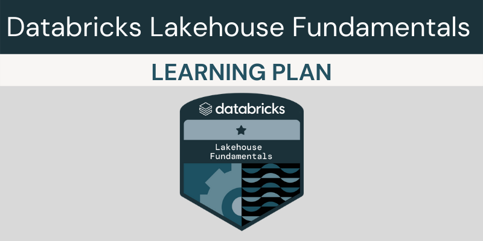
What is a Data Warehouse?
- Data Warehouse unlike relational databases provided Business Intelligence, analytics and pre defined schema logic.
- They were not designed for semi and unstructured data. They can't handle upticks in volume and velocity and had long processing times.
Data lakes
- Data Lakes had flexible data storage capabilities, streaming support and AI ML capabilities.
- But it introduced concerns and are not supported for transactional data. There is no data reliability and data governance is still a concern.
Hence businesses required two different data platforms.
- The data warehouse had structured tables for BI and SQL Analytics, whereas data lakes had unstructured data for Data Science and Data Streaming.
- They also had different governance and security models and most important there were two separate copies of data.
How does the Lakehouse Solve this Problem?
- It can serve all ML, SQL and BI, streaming use cases.
- One security and governance approach for all data assets on cloud.
- An open and reliable data platform to efficiently handle all data types.
Key Features
- Transaction Support
- Schema Enforcement and Governance
- BI Support
- Data Governance
- Decoupled Storage from Compute and Separate Clusters.
- Support for Diverse data workload in the same data repository.
Problems with Data Lake
- Lack of ACID Transaction support
- Lack of Schema Enforcement
- Lack of Integration with Data Catalog
Delta Lake
- File based open data format that provides ACID transaction guarantees. We can handle metadata for petabytes of data.
- Audit history and time travel capabilities.
- Schema Enforcement ensures there is no wrong data that is in the tables and schema evolution to accommodate ever changing data.
- Supports Change Data Capture, Slowly Changing Dimensions and Streaming Upserts.
- Delta Tables are based on Apache Parquet, common format for structuring data.
- It has a transaction log and acts as a single source of truth.
Photon
- Next Gen query engine that saves costs, its compatible with Spark APIs. Loading and querying data becomes increasingly faster.
- Each Spark Executor can have a photon engine that accelerates portion of spark and sql queries.
Why is a Unified governance and security model structure important?
The more individual access points added to the system like users, groups or external connectors, the higher the risk of data breaches.
Some challenges are diversity of data assets, using two incompatible platforms and fragmented tool usage.
Databricks overcomes these challenges by using Unity Catalog for Data Governance, delta sharing to share data across any computing platform.
Unlike a few years back when each workspace/team had different Access Controls, User Management and Metastores, with Unity Catalog we can have centralized access controls and user management, including row and column level access permission privileges.
We can control access to multiple data items at one time eg. personal info can be tagged and a single rule can be defined to provide access as needed.
Unity provides highly detailed audit trails that define who has accessed what data at what time and also highlights the changes made.
Data Lineage is provided by Unity Catalog and it includes the history of data, what datasets it came from, who created it and when + the transformations performed on it.
Data Sharing With Delta Sharing
Usually the data is shared as tables and not files. So this system is not scalable.
We cannot share data across platforms using traditional technology.
Delta Sharing allows the data to be moved to any cloud platform securely.
Advantages
- No new ingestion processes needed to share data and integrates with PowerBI, Tableau, Spark and Pandas.
- Data is shared live without copying it.
- Centralized Admin and Governance.
- The data products can be built and packaged via a central marketplace.
- There are privacy safe clean rooms to secure data and collaboration between vendors.
Divided Security Architecture
Control Plane
- Consists of managed backend services that Databricks provides.
- These live in Databricks own cloud account.
- It runs the web application and manages the notebooks, applications and clusters.
Data Plane
Data plane is where the data is computed. Unless we use serverless compute, the clusters run in the business owner's own cloud account.
The information in the control plane is encrypted at rest and in transit.
Databricks clusters are shortlived and do not persist after job termination.
If there are any security issues coming up, the service request can be generated and the Databricks employees are given access to the workspace for a certain duration of time.
User Access and Identity
- Table ACL feature
- IAM Instance Profiles
- Securely Store access keys
- The Secrets API
Instant Compute and Serverless
In normal scenario, we run clusters on the dataplane that's connected to an external storage.
But some challenges with this are that:
- Cluster Creation is complicated.
- Environment Setup is slow
- Capacity and costs of the business cloud account should be managed.
In Serverless Compute, Databricks allows us to run the clusters on their cloud account instead of the business.
The environment starts immediately and can scale in seconds.
These servers are unassigned to any user, always in a warm state and waiting to run jobs given by the users.
The three layers of isolation in the container that is hosting the runtime, virtual machine hosting the container and the virtual network for the workspace.
Each of the parts is isolated with no sharing or cross network traffic allowed.
Once the job is done, the VM is terminated and not used again for other compute tasks.
Common Data Lakehouse Terminology
Unity Catalog Components
- Metastore: Top level logical container in Unity Catalog. It's a construct that represents the metadata. They offer improved security and other useful features like auditing.
- Catalog : Top most container for data objects in Unity Catalog. Data Analysts use this to reference data objects in UC.
There are three main namespaces to address the data location names in UC. The format is SELECT * FROM catalog.schema.table
-
Schema : Contains tables and views and is unchanged by UC. Forms the second part of the three level namespace. Catalogs can contain many schemas as desired.
-
Tables : SQL relations with ordered list of columns. They have metadata like comments, tags and list of columns.
-
Views : They are stored queries that are executed when we query the view. They are read only.
Other components are Storage Credentials created by admins and used to authenticate with cloud storage containers.
Shares and recipients is related to delta sharing for low overhead sharing over different channels inside or outside organization by linking metastores in different parts of the world.
The metastore is essentially a logical construct with Control Plane and Cloud Storage.
The metadata information about the data objects and the ACLs are stored in control plane and data related to objects maintained by the metastore is stored in cloud storage.
Challenges in Data Engineering Workload
- Complex Data Ingestion Methods
- Support For data engineering principles
- Third Party Orchestration Tools
- Pipeline Performance Tuning
- Inconsistencies between partners.
The Databricks Lakehouse platform provides us with managed data ingestion, schema detection, enforcement and evaluation along with declarative and auto scaling data flow with a native orchestrator.
Capabilities of DE in Lake House
- easy data ingestion
- auto etl pipelines
- data quality checks
- batch and stream tuning
Autoloader
As data loads in the lakehouse, Databricks can infer the schema after processing the data as they arrive in the cloud storage.
It auto detects the schema and enforces it guaranteeing data quality.
The COPY INTO command is used by data analysts to load data from a folder to the Delta Lake Table.
Delta Live Tables
ETL framework that uses a simple declarative approach to build reliable pipelines and automatically auto scales the infra so that data folks can spend less time on tooling and get value from data.
- We can declaratively express entire data flows in Python.
- Natively enable software engineering best practices such as separate dev and prod environments and test before deployment in a single API.
Workflows
Orchestration service embedded in Databricks Lakehouse platform. Allow data teams to build reliable data workflows on any cloud.
We can orchestrate pipelines written in DLT or dbt, ML pipelines etc.
We can use external tools like Apache Airflow to manage the workflows or even use the API.
One example of delta live tables pipeline is using Twitter Stream API to retrieve live tweets to S3, then use delta live tables to ingest, clean and transform tweets and finally do sentiment analysis.
Data Streaming Workloads
-
Every organization generates large amounts of real time data. This data includes transaction records, third party news, weather, market data and real time feeds, web clicks, social posts, emails and instant messages.
-
Some applications of real time data are Fraud Detection, Personalized Offers, Smart Pricing, Smart Devices and Predictive maintainence.
Databricks supports real time analytics, real time ML and real time applications.
Specific use cases include Retail, Industrial Automation, Healthcare and Financial Instituitions.
ML Workloads
Problems
- Multiple Tools Available
- Hard to track experiments
- Reproducing Results is hard
- ML Models are hard to deploy
Solutions
- Built in ML Frameworks and model explainability
- Support for Distributed Training
- AutoML and Hyperparameter Tuning
- Support for hardware accelerators
Credential
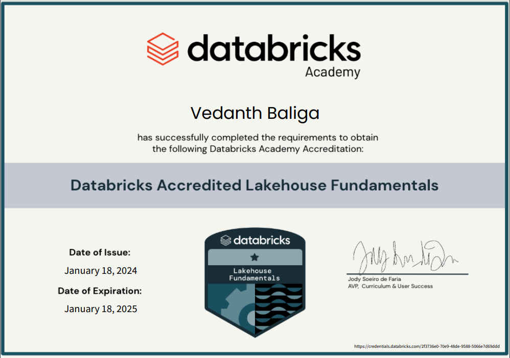
Databricks Academy : Data Engineer Learning Plan
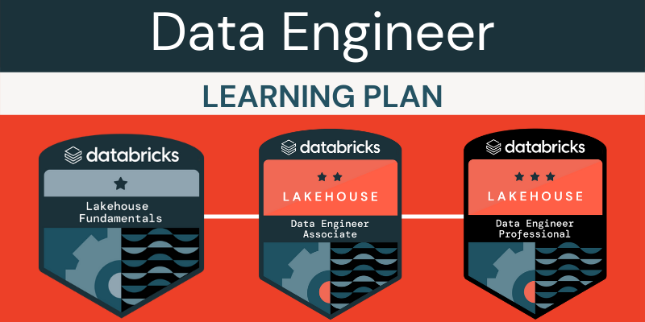
Link to the course : click here
Course 1 : Data Engineering with Databricks
Goals
-
Use the Databricks Data Science and Engineering Workspace to perform common code development tasks in a data engineering workflow.
-
Use Spark SQL/PySpark to extract data from a variety of sources, apply common cleaning transformations, and manipulate complex data with advanced functions.
-
Define and schedule data pipelines that incrementally ingest and process data through multiple tables in the lakehouse using Delta Live Tables in Spark SQL/PySpark.
-
Create and manage Databricks jobs with multiple tasks to orchestrate and monitor data workflows. Configure permissions in Unity Catalog to ensure that users have proper access to databases for analytics and dashboarding.
Getting Started With the Workspace
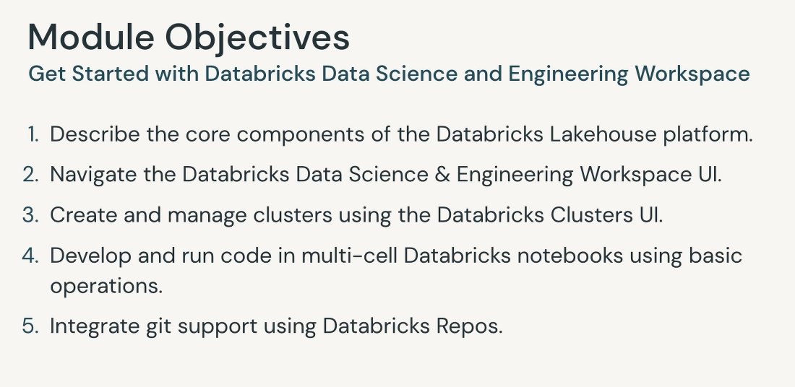
Architecture and Services
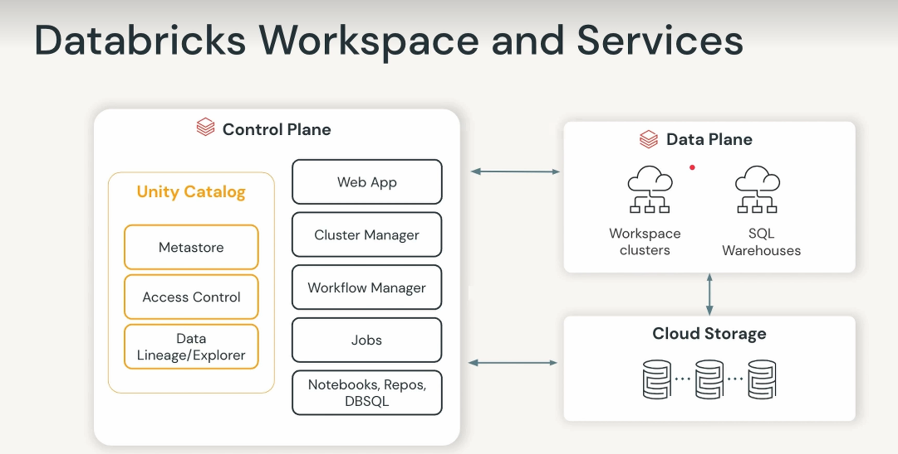
-
The data plane has the compute resources and clusters that is connected to a cloud storage. It can be single or multiple cloud storage accounts.
-
The Control Plane stores the UI, notebooks and jobs and gives the ability to manage clusters and interact with table metadata.
-
Workflow manager allows us to manage tasks and pipelines.
-
Unity Catalog mostly provides with Data Lineage, Data Quality and Data Discovery
-
There are three personas that Databricks provides : Data Science and Engineering Persona, ML Persona and SQL Analyst Persona
-
Cluster is a set of computational resources where workloads can be run as notebooks or jobs.
-
The clusters live in the data plane in the org cloud account but cluster mgmt is fn of control plane.
🧭 Simple Analogy Imagine a restaurant:
The control plane is the manager’s office — taking orders, scheduling, planning.
The data plane is the kitchen — where the food (your data) is actually cooked and served.
🧠 In Databricks Terms: Term Meaning Control Plane The brains of the platform — manages jobs, notebooks, users, UI, APIs Data Plane The muscles — where your code runs and your data is processed
🔧 Control Plane Hosted by Databricks (in their cloud)
Handles:
Notebooks, jobs, clusters UI
User authentication & access control
Job scheduling, monitoring, logging
No access to your data
Think of it as a remote command center
✅ Always outside your VPC
💽 Data Plane Runs inside your cloud (VPC) — AWS, Azure, or GCP
Handles:
Spark cluster workers
Data access from S3/Blob/GCS
UDFs, jobs, pipelines
✅ This is where your actual data lives and is processed
🛡️ Security Separation Databricks control plane never sees your actual data.
You can even encrypt traffic between planes or use PrivateLink to limit internet exposure.
🧪 Example: You submit a notebook in Databricks:
Request hits the control plane (UI/API layer)
The control plane tells the data plane to spin up a cluster
Your code runs on executors in the data plane, accessing your data securely
Compute Resources
Overview
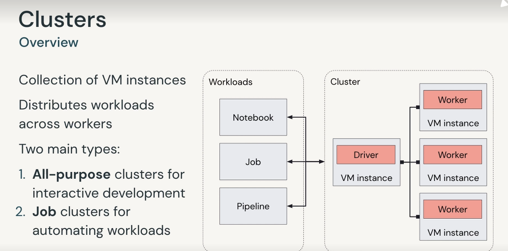
Cluster Types
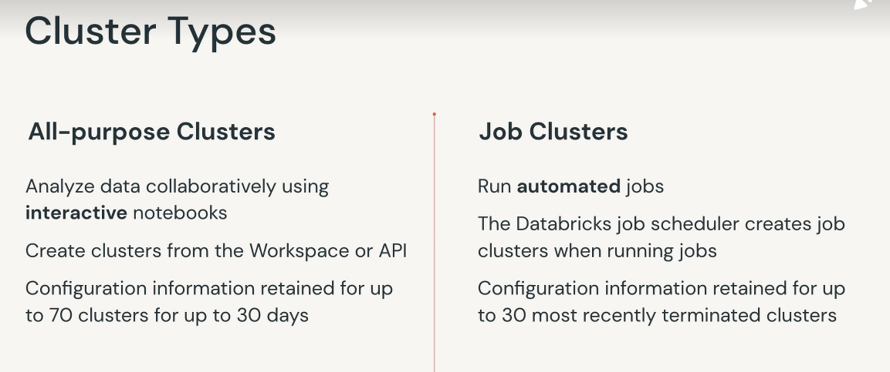
- Job Clusters cannot be restarted if terminated.
- All purpose clusters can be started whenever we want it to.
Cluster Mode
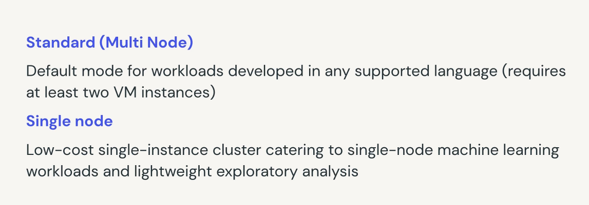
Databricks Runtime Version
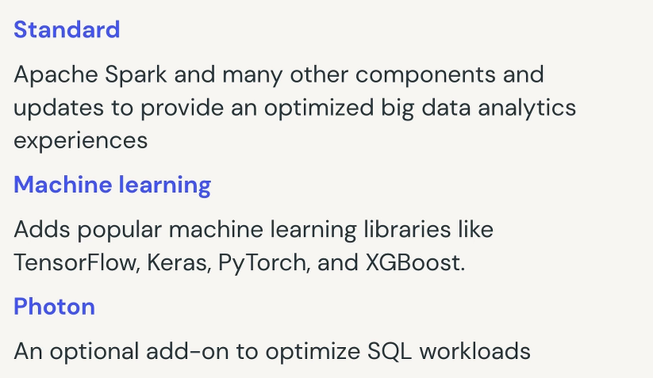
Access Mode
Specifies overall security model of the cluster. 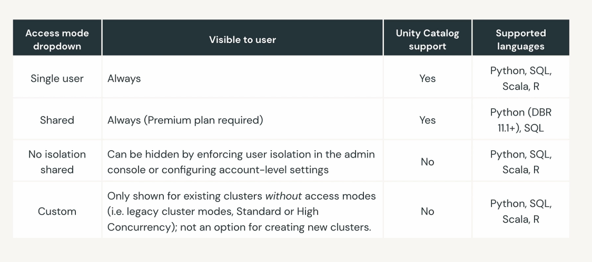
- DBFS mounts are supported by single user clusters.
Cluster Policies
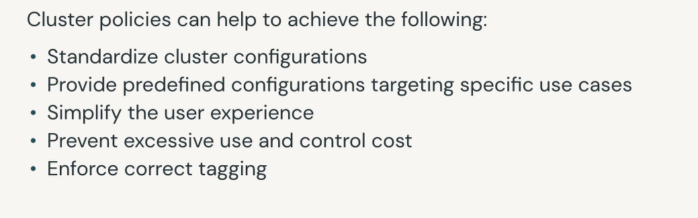
Access Control Matrix
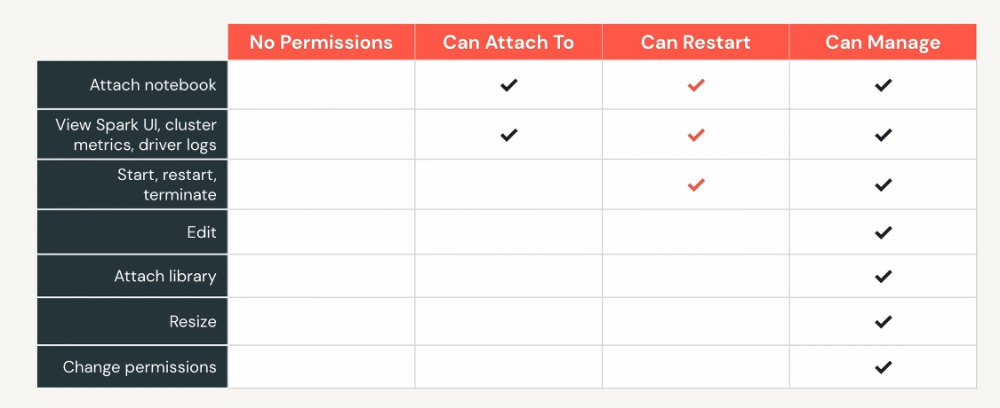
- On shared security mode multiple users can be granted access.
- On single user security mode, each user will have their own cluster.
Why Use Databricks Notebooks?
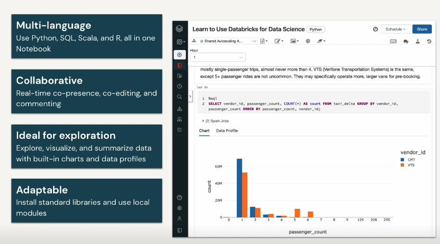
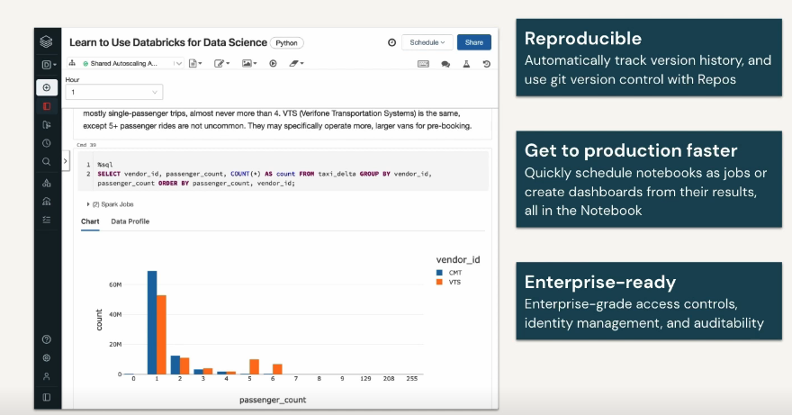
Databricks Utilities
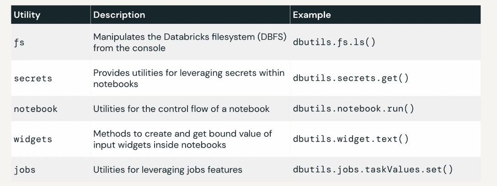
Databricks Repos
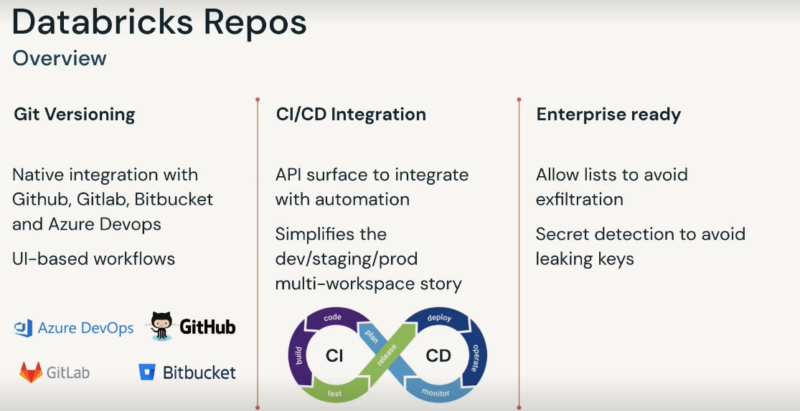
Some supported operations include:
- Cloning a repository, pulling and upstream changes.
- Adding new items, creating new files, committing and pushing.
- Creating a new branch.
- Any changes that are made in a Databricks Repo can be tracked in a Git Repo
We cannot DELETE branches from repos in databricks. It has to be done using Github/Azure Devops.
Many operations of the control plane can be versioned using Repos feature like keeping track of versions of notebooks and also to test clusters.
Transform Data With Spark
Data Objects in the Lakehouse
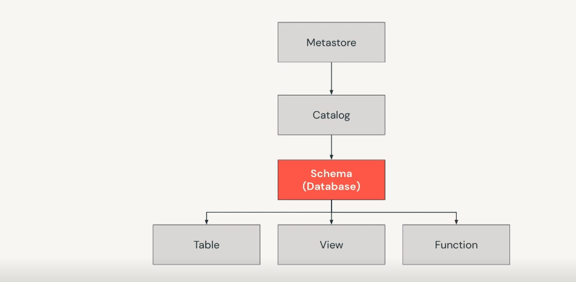
- Catalog - Grouping of Databases
- Schema - Grouping of Objects in catalog
- Every schema has a table that is managed or external
Managed vs External Storage
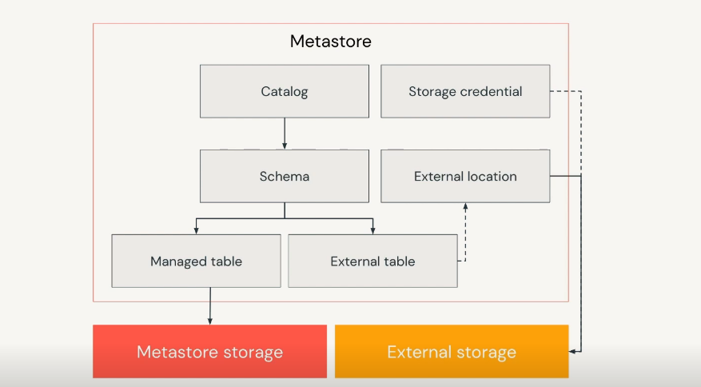
-
Managed Tables are made up of files that are stored in a managed store location configured to the metastore. Dropping the table deletes all the files also.
-
In case of external tables, the data is stored in a cloud storage location. When we drop an external table, this underlying data is retained.
-
View is a saved query against one or more databass. Can be temporary or global. Temp Views are scoped only to the current spark session
-
CTE's only alias the results of the query while that query is being planned or executed.
Extracting Data Directly from Files with Spark SQL
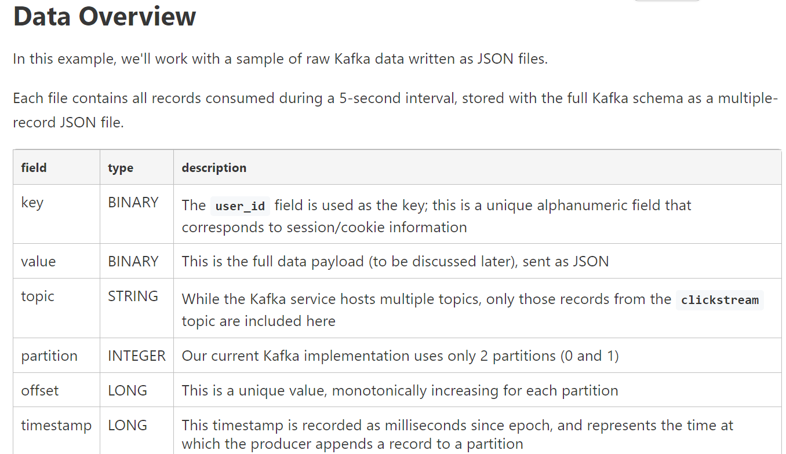
Details in the JSON Clickstream File
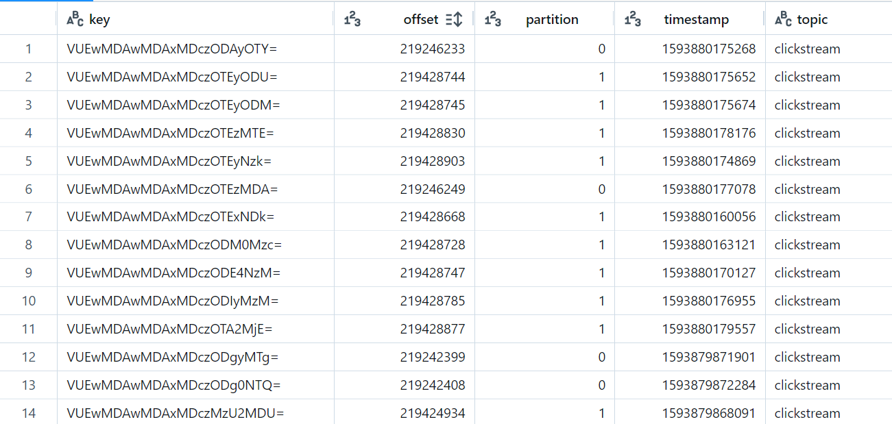Querying a Directory of Files
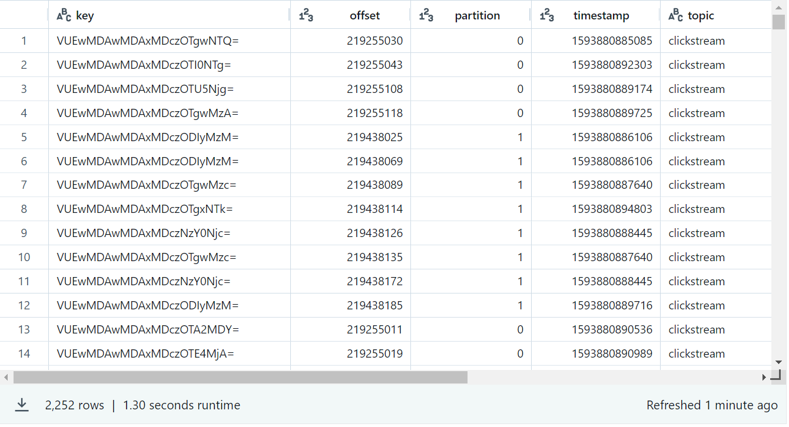Create a View for the Files
Create Temporary References
Common table expressions
These only exist while running the cell. CTEs only alias the results of the query while the cell is being planned and executed.
The Temp Viws are scoped only to the current spark session.
Working with Binary Files
Extract the Raw Bytes and Metadata of a File
Some workflows may require working with entire files, such as when dealing with images or unstructured data. Using binaryFile to query a directory will provide file metadata alongside the binary representation of the file contents.
Specifically, the fields created will indicate the path, modificationTime, length, and content.
Providing Options When Dealing with External Data Sources
Directly Querying the csv file
The data is not formatted properly. 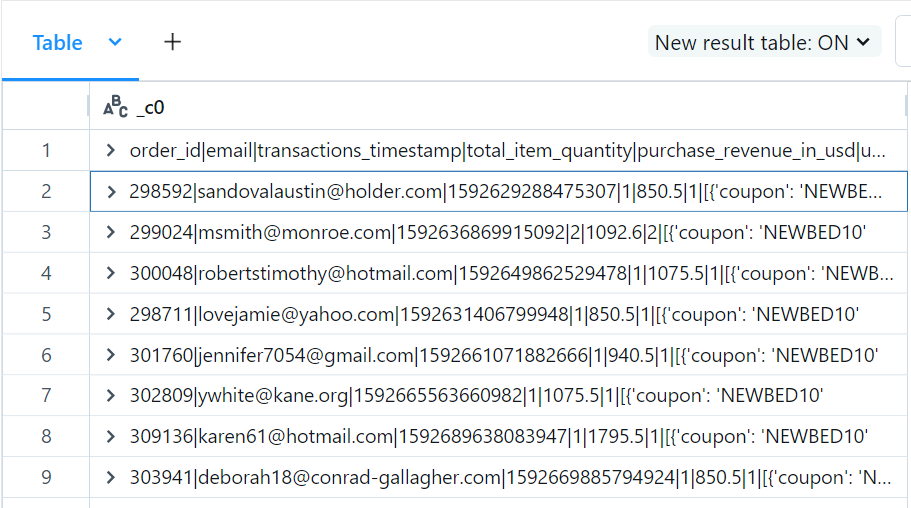
Registering Tables on External Data with Read Options
While Spark will extract some self-describing data sources efficiently using default settings, many formats will require declaration of schema or other options.
While there are many additional configurations you can set while creating tables against external sources, the syntax below demonstrates the essentials required to extract data from most formats.
CREATE TABLE table_identifier (col_name1 col_type1, ...)
USING data_source
OPTIONS (key1 = val1, key2 = val2, ...)
LOCATION = path
Creating a table using SQL DDL and Providing Options
CREATE TABLE IF NOT EXISTS sales_csv
(order_id LONG,email STRING,timestamp LONG,total_item_quantity INTEGER,items STRING)
USING CSV
OPTIONS (
header = 'true'
delimiter = "|"
)
LOCATION "${paths.dba_sales.csv}"
No data will be moved while creating out tables. the data is just called from the files.
NOTE: When working with CSVs as a data source, it's important to ensure that column order does not change if additional data files will be added to the source directory. Because the data format does not have strong schema enforcement, Spark will load columns and apply column names and data types in the order specified during table declaration.
Checking the Description of the Table
IMP!!! : The table that is created using the external source will be in CSV format and not delta.
Limits of Tables with External Data Sources
-
When we are using external data sources other than Delta Lake and Data Lakehouse we can't expect the performance to be good always.
-
Delta Lake will always guarantee that we get the most recent data from the storage.
Example
Here is an example where external file data is being updated in out sales_csv table.
%python
(spark.read
.option("header", "true")
.option("delimiter", "|")
.csv(DA.paths.sales_csv)
.write.mode("append")
.format("csv")
.save(DA.paths.sales_csv, header="true"))
The count method on this will not reflect the newly added rows in the dataset.
At the time we previously queried this data source, Spark automatically cached the underlying data in local storage. This ensures that on subsequent queries, Spark will provide the optimal performance by just querying this local cache.
Our external data source is not configured to tell Spark that it should refresh this data.
We can manually refresh the cache of our data by running the REFRESH TABLE command.
Note that refreshing the table will invalidate out cache so it needs to be rescanned again.
Using JDBC to extract data from SQL Databases
SQL databases are an extremely common data source, and Databricks has a standard JDBC driver for connecting with many flavors of SQL.
DROP TABLE IF EXISTS users_jdbc
CREATE TABLE users_jdbc
USING jdbc
OPTIONS (
url = "jdbc:sqllite:paths.ecommerce_db",
dtable = 'users'
)
Checking if there are any files in the JDBC
Table Description 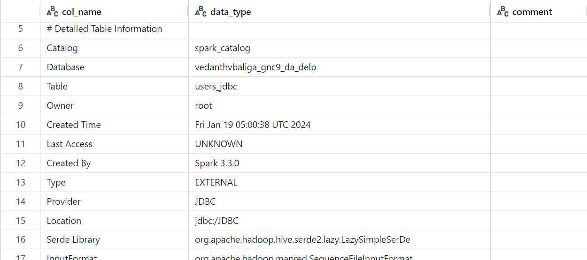
%python
import python.sql.functions as F
location = spark.sql("DESCRIBE EXTENDED users_jdbc").filter(F.col("col_name") == "Location").first["data_type"]
print(location)
files = db.fs.ls(location)
print(f"Found {len(files)} files"
How does Spark Interact with External Databases
-
Move the entire database to Databricks and then execute logic on the currently active cluster.
-
Pushing the query to an external database and only transfer results back to Databricks.
-
There will be network transfer latency while moving data back and forth between databricks and DWH.
- Queries will not run well on big tables.
Cleaning Data using Spark
Data 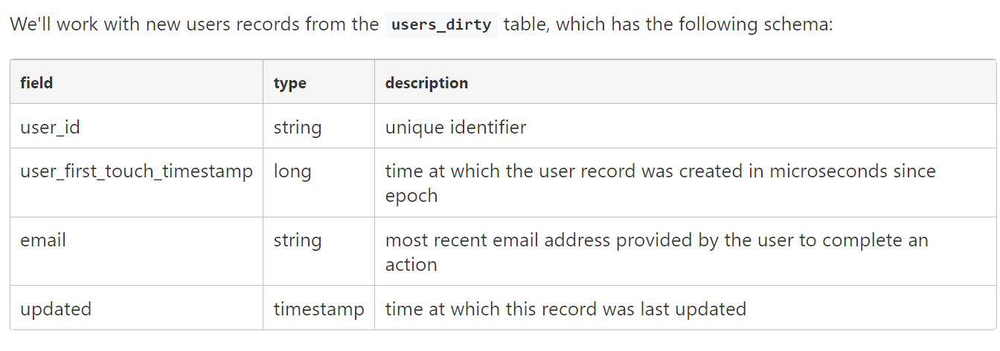
Check the table counts
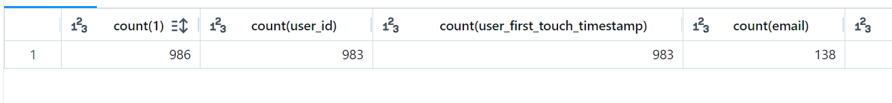We can observe that some data is missing.
848 records are missing.Using Python the same might be done
from pyspark.sql.functions import col
usersDF = spark.read.table("users_dirty")
usersDF.where(col("email").isNull()).count()
Deduplicating the Rows Based on Specific Columns
The code below uses GROUP BY to remove duplicate records based on user_id and user_first_touch_timestamp column values. (Recall that these fields are both generated when a given user is first encountered, thus forming unique tuples.)
Here, we are using the aggregate function max as a hack to:
-
Keep values from the
emailandupdatedcolumns in the result of our group by -
Capture non-null emails when multiple records are present
Steps to Deduplicate
- Fetch All the Records [986 records]
CREATE OR REPLACE TEMP VIEW deduped_users AS
SELECT user_id, user_first_touch_timestamp, max(email) AS email, max(updated) AS updated
FROM users_dirty
- Filter records where user_id is not null [983 records]
CREATE OR REPLACE TEMP VIEW deduped_users AS
SELECT user_id, user_first_touch_timestamp, email AS email, updated AS updated
FROM users_dirty
WHERE user_id IS NOT NULL;
SELECT * FROM deduped_users
- Group by
user_idanduser_first_timestamp
CREATE OR REPLACE TEMP VIEW deduped_users AS
SELECT user_id, user_first_touch_timestamp, first(email) AS email, first(updated) AS updated
FROM users_dirty
WHERE user_id IS NOT NULL
GROUP BY user_id, user_first_touch_timestamp;
SELECT * FROM deduped_users
We can use max also since we dont care which value is grouped by for email and updated
CREATE OR REPLACE TEMP VIEW deduplicated AS
SELECT user_id,user_timestamp, max(email) AS email, max(updated) AS updated
FROM users_dirty
WHERE user_id IS NOT NULL
GROUP BY user_id,user_first_touch_timestamp;
In either case we get 917 records.
Check for distinct user_id and user_first_touch_timestamp rows
SELECT COUNT(DISTINCT(user_id, user_first_touch_timestamp))
FROM users_dirty
WHERE user_id IS NOT NULL
Validating Duplicates
Based on our manual review above, we've visually confirmed that our counts are as expected.
We can also programmatically perform validation using simple filters and WHERE clauses.
Validate that the user_id for each row is unique.
SELECT max(row_count) <= 1 AS no_of_duplicate_ids FROM(
SELECT user_id, count(*) AS row_count
FROM deduped_users
GROUP BY user_id
)
Checking if each user has at most one email id
SELECT max(row_count) <= 1 no_of_duplicate_email FROM (
SELECT email,COUNT(user_id) AS user_id_count
FROM deduped_users
WHERE email IS NOT NULL
GROUP BY email
)
In Python the same thing is done via:
display(dedupedDF
.where(col("email").isNotNull())
.groupby("email")
.agg(count("user_id").alias("user_id_count"))
.select((max("user_id_count") <= 1).alias("at_most_one_id")))
Working with RegEx
- Correctly scale and cast the
user_first_touch_timestamp - Extract the calendar date and time in a human readable format
- Use
regexp_extractto fetch the email domains. Docs
SELECT *,
date_format(first_touch,"MM DD,YYYY",first_touch_date),
date_format(first_touch,"HH:mm:ss",first_touch_time),
regexp_extract(email,"?<=@.+") AS email_domain
FROM (
SELECT *,
CAST(user_first_touch_timestamp/1e6 AS time_stamp) AS first_touch
FROM deduped_users
)
Why divide by 1e6 to convert timestamp to a date?
In Python
from pyspark.sql.functions import date_format, regexp_extract
display(dedupedDF
.withColumn("first_touch", (col("user_first_touch_timestamp") / 1e6).cast("timestamp"))
.withColumn("first_touch_date", date_format("first_touch", "MMM d, yyyy"))
.withColumn("first_touch_time", date_format("first_touch", "HH:mm:ss"))
.withColumn("email_domain", regexp_extract("email", "(?<=@).+", 0))
)
Complex Transformations on JSON data
from pyspark.sql.functions import col
events_trigger_df = (spark
.table("events_raw"),
.select(col("key").cast("string"),
col("value").cast("string"))
)
display(events_trigger_df)
Working With Nested Data
Table 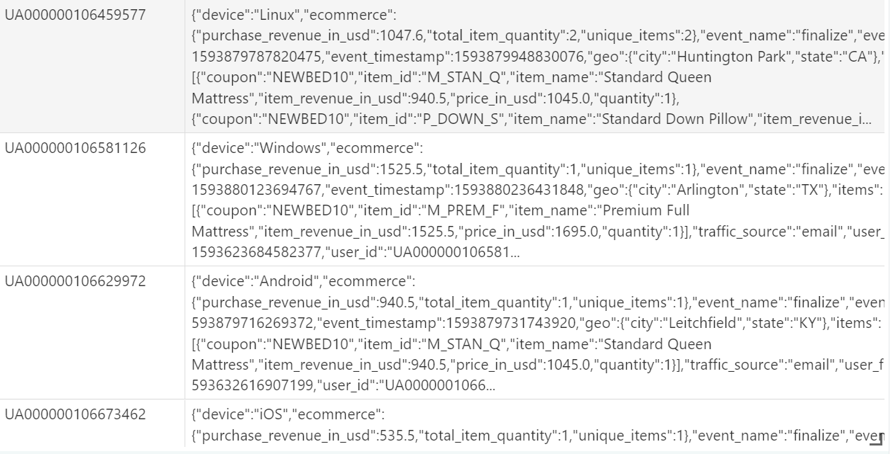
The code cell below queries the converted strings to view an example JSON object without null fields (we'll need this for the next section).
NOTE: Spark SQL has built-in functionality to directly interact with nested data stored as JSON strings or struct types.
- Use : syntax in queries to access subfields in JSON strings
- Use . syntax in queries to access subfields in struct types
Task: Check where the event name is finalized
Extracting the schema of the JSON
SELECT schema_of_json('{"device":"Linux","ecommerce":{"purchase_revenue_in_usd":1075.5,"total_item_quantity":1,"unique_items":1},"event_name":"finalize","event_previous_timestamp":1593879231210816,"event_timestamp":1593879335779563,"geo":{"city":"Houston","state":"TX"},"items":[{"coupon":"NEWBED10","item_id":"M_STAN_K","item_name":"Standard King Mattress","item_revenue_in_usd":1075.5,"price_in_usd":1195.0,"quantity":1}],"traffic_source":"email","user_first_touch_timestamp":1593454417513109,"user_id":"UA000000106116176"}') AS schema
Task: Convert the JSON data to table/view
CREATE OR REPLACE TEMP VIEW parsed_events AS SELECT json.* FROM
(
SELECT from_json(value, '<the schemaabove>') AS json
FROM event_strings
)
Some more code examples for from_json
#Convert JSON string column to Map type
from pyspark.sql.types import MapType,StringType
from pyspark.sql.functions import from_json
df2=df.withColumn("value",from_json(df.value,MapType(StringType(),StringType())))
df2.printSchema()
df2.show(truncate=False)
Docs for from_json
Array Manipulation Functions
-
explode()separates the elements of an array into multiple rows; this creates a new row for each element. -
size()provides a count for the number of elements in an array for each row.
The code below explodes the items field (an array of structs) into multiple rows and shows events containing arrays with 3 or more items.
In Python,
from pyspark.sql.functions import explode, size
exploded_eventsDF = (parsed_eventsDF
.withColumn("item", explode("items"))
)
display(exploded_eventsDF.where(size("items") > 2))
Complex Array Manipulation Functions
collect_set collects unique values for a field including those within arrays also.
flatten() combines various values from multiple arrays in a single array.
array_distinct() removes duplicate values from the array.
Task: Pull out cart history details from the events table
Step 1 : Collect all event names from the table for each user id
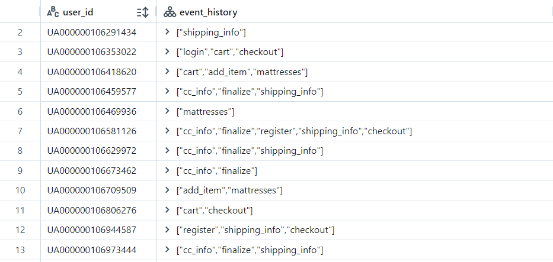Step 2 : Explode event_hiistory
SELECT user_id, explode(collect_set(event_name)) AS event_history
FROM exploded_events
GROUP BY user_id
Step 3 : Collect all item ids by fetching them from the items json column
SELECT user_id,
collect_set(event_name) AS event_history,
collect_set(items.item_id) AS cart_history
FROM exploded_events
GROUP BY user_id
Step 4 : Flatten the above cart_history results
SELECT user_id,
collect_set(event_name) AS event_history,
flatten(collect_set(items.item_id)) AS cart_history
FROM exploded_events
GROUP BY user_id
SELECT user_id,
collect_set(event_name) AS event_history,
array_distince(flatten(collect_set(items.item_id))) AS cart_history
FROM exploded_events
GROUP BY user_id
SQL UDF Functions
User Defined Functions (UDFs) in Spark SQL allow you to register custom SQL logic as functions in a database, making these methods reusable anywhere SQL can be run on Databricks. These functions are registered natively in SQL and maintain all of the optimizations of Spark when applying custom logic to large datasets.
At minimum, creating a SQL UDF requires a function name, optional parameters, the type to be returned, and some custom logic.
Below, a simple function named sale_announcement takes an item_name and item_price as parameters. It returns a string that announces a sale for an item at 80% of its original price.
CREATE OR REPLACE FUNCTION sales_announcement(item_name STRING,item_price INT)
RETURN STRING
RETURN concat("The ",item_name,"is on sale for $",round(item_price*0.8,0))
This function is applied to all the columns at once.
Here is a Jupyter notebook with all the common SQL UDF Functions.
- Persist between execution environments (which can include notebooks, DBSQL queries, and jobs).
- Exist as objects in the metastore and are governed by the same Table ACLs as databases, tables, or views.
- To create a SQL UDF, you need
USE CATALOGon the catalog, andUSE SCHEMAandCREATE FUNCTIONon the schema. - To use a SQL UDF, you need
USE CATALOGon the catalog,USE SCHEMAon the schema, andEXECUTEon the function.
We can use DESCRIBE FUNCTION to see where a function was registered and basic information about expected inputs and what is returned (and even more information with DESCRIBE FUNCTION EXTENDED).
Case When Statements in SQL UDF
CREATE OR REPLACE FUNCTION item_preference(name STRING, price INT)
RETURNS STRING
RETURN CASE
WHEN name = "Standard Queen Mattress" THEN "This is my default mattress"
WHEN name = "Premium Queen Mattress" THEN "This is my favorite mattress"
WHEN price > 100 THEN concat("I'd wait until the ", name, " is on sale for $", round(price * 0.8, 0))
ELSE concat("I don't need a ", name)
END;
SELECT *, item_preference(name, price) FROM item_lookup
Python UDFs
User-Defined Function (UDF)
A custom column transformation function
-
Can’t be optimized by Catalyst Optimizer
-
Function is serialized and sent to executors
-
Row data is deserialized from Spark's native binary format to pass to the UDF, and the results are serialized back into Spark's native format
-
For Python UDFs, additional interprocess communication overhead between the executor and a Python interpreter running on each worker node
Define a Function
Create User Defined Function
- First serialize the function and then send it to the executors to be applied to the DataFrame records.
Apply the UDF on the email column
Register UDF to be used in SQLsales_df.createOrReplaceTempView("sales")
first_letter_udf = spark.udf.register("sql_udf",fist_letter_function)
Use it in SQL
Using Decorator Syntax
Alternatively, you can define and register a UDF using Python decorator syntax. The @udf decorator parameter is the Column datatype the function returns.
Normal Python UDFs vs Pandas UDFs
Pandas UDFs are available in Python to improve the efficiency of UDFs. Pandas UDFs utilize Apache Arrow to speed up computation.

The user-defined functions are executed using: * Apache Arrow, an in-memory columnar data format that is used in Spark to efficiently transfer data between JVM and Python processes with near-zero (de)serialization cost * Pandas inside the function, to work with Pandas instances and APIs
Normal Python UDF
from pyspark.sql.functions import udf
# Use udf to define a row-at-a-time udf
@udf('double')
# Input/output are both a single double value
def plus_one(v):
return v + 1
df.withColumn('v2', plus_one(df.v))
from pyspark.sql.functions import pandas_udf, PandasUDFType
@pandas_udf('double', PandasUDFType.SCALAR)
def pandas_plus_one(v):
return v + 1
df.withColumn('v2', pandas_plus_one(df.v))
In the row-at-a-time version, the user-defined function takes a double "v" and returns the result of "v + 1" as a double. In the Pandas version, the user-defined function takes a pandas.Series "v" and returns the result of "v + 1" as a pandas.Series. Because "v + 1" is vectorized on pandas.Series, the Pandas version is much faster than the row-at-a-time version.
Pandas Vectorized UDF
import pandas as pd
from pyspark.sql.functions import pandas_udf
# We have a string input/output
@pandas_udf("string")
def vectorized_udf(email: pd.Series) -> pd.Series:
return email.str[0]
Registering UDF for usage in SQL Namespace
Using UDF in SQL Statement
Managing Data with Delta Lake
Delta Lake enables building a data lakehouse on top of the existing cloud storage. Its not a database service or data warehouse. It's built for scalable metadata handling. Delta Lake brings ACID transaction guarantees to object storage.
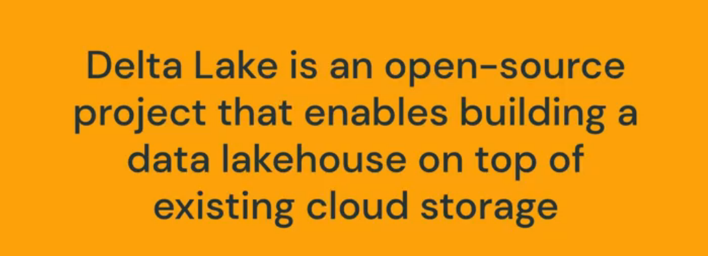
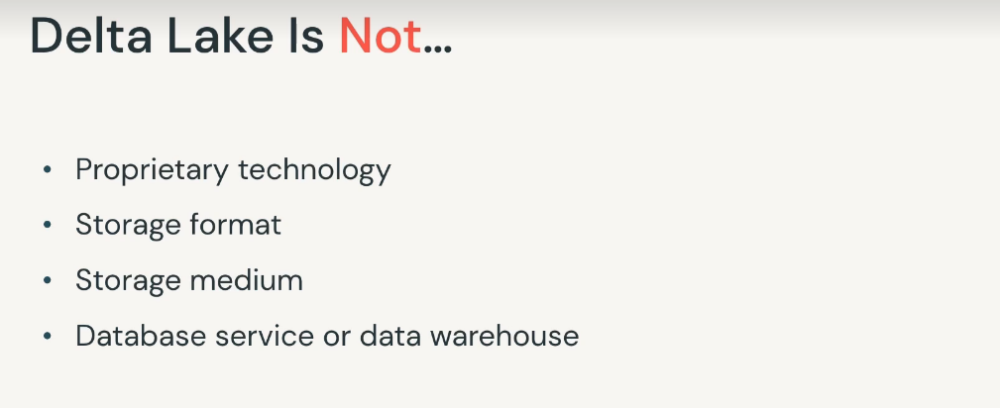
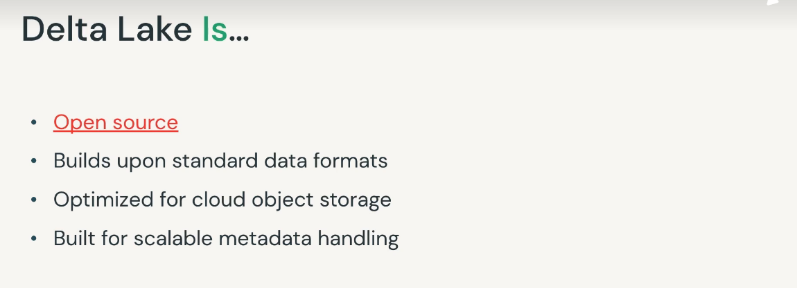
What is ACID? 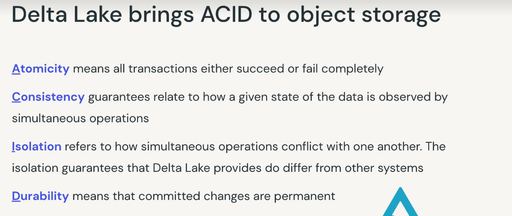
Problems Solved by ACID
- Hard to append data
- Modification of existing data is difficult
- Jobs fail mid way
- Costly to keep historical data versions.
Its the default format to create tables in Databricks
Schemas and Tables
Creating Schema in the default directory dbfs:/user/hive/warehouse
Creating Schema in a custom location
CREATE SCHEMA IF NOT EXISTS ${da.schema_name}_custom_location LOCATION '${da.paths.working_dir}/${da.schema_name}_custom_location.db'
Creating Managed Tables
We dont need to mention the location of the tables.
USE ${da.schema_name}_default_location;
CREATE OR REPLACE TABLE managed_table (width INT, length INT, height INT);
INSERT INTO managed_table
VALUES (3, 2, 1);
SELECT * FROM managed_table;
To find the location of the managed table we can use the DESCRIBE DETAIL managed_table command. Output is dbfs:/user/hive/warehouse/rajeevapoornachandrahsbaliga_gnc9_da_delp_default_location.db/managed_table
The default format of the table is delta.
If we drop the managed table, only the schema will be there, the table and data will be deleted.
Checking if the schema still exists
schema_default_location = spark.sql(f"DESCRIBE SCHEMA {DA.schema_name}_default_location").collect()[3].database_description_value
print(schema_default_location)
dbutils.fs.ls(schema_default_location)
Output : dbfs:/user/hive/warehouse/rajeevapoornachandrahsbaliga_gnc9_da_delp_default_location.db
⚠️ Creating External Tables
USE ${da.schema_name}_default_location;
CREATE OR REPLACE TEMPORARY VIEW temp_delays
USING CSV OPTIONS (
path = "${da.paths.datasets}/flights/delay_departures.csv",
header = "true",
mode = "FAILFAST"
);
CREATE OR REPLACE EXTERNAL TABLE external_table LOCATION '${da.path.working_dir}/external_table' AS
SELECT * FROM temp_delays;
SELECT * FROM external_table
Dropping the external table deletes the table definition but the data is still there.
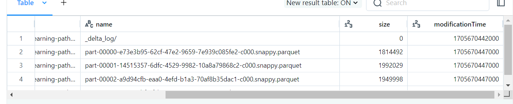
To drop external table schema use :
If the schema is managed by the workspace-level Hive metastore, dropping a schema using CASCADE recursively deletes all files in the specified location, regardless of the table type (managed or external).
Setting Up Delta Tables
After extracting data from external data sources, load data into the Lakehouse to ensure that all of the benefits of the Databricks platform can be fully leveraged.
While different organizations may have varying policies for how data is initially loaded into Databricks, we typically recommend that early tables represent a mostly raw version of the data, and that validation and enrichment occur in later stages.
This pattern ensures that even if data doesn't match expectations with regards to data types or column names, no data will be dropped, meaning that programmatic or manual intervention can still salvage data in a partially corrupted or invalid state.
CTAS Statements
Used to populate the delta tables using data from an input query
CREATE OR REPLACE TABLE sales AS
SELECT * FROM parquet.`${DA.paths.datasets}/ecommerce/raw/sales-historical`;
DESCRIBE EXTENDED sales;
Note
CTAS statements automatically infer schema information from query results and do not support manual schema declaration.
This means that CTAS statements are useful for external data ingestion from sources with well-defined schema, such as Parquet files and tables.
CTAS statements also do not support specifying additional file options.
Ingesting csv with CTAS
CREATE OR REPLACE TABLE sales_unparsed AS
SELECT * FROM csv.`${da.paths.datasets}/ecommerce/raw/sales-csv`;
SELECT * FROM sales_unparsed;
Output is as follows: 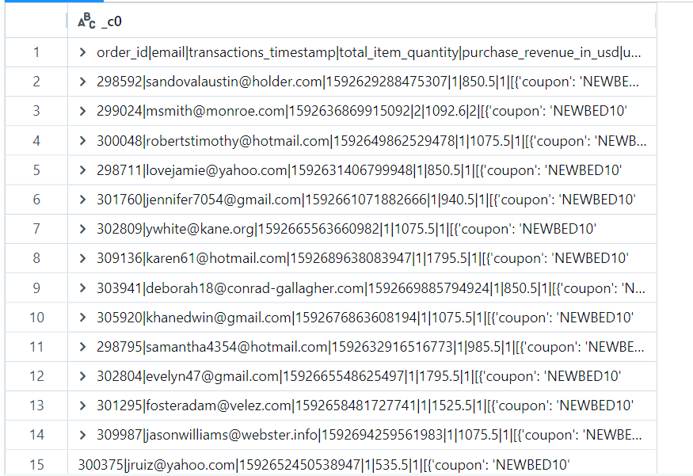
To fix this we use a reference to the files that allows us to specify the options.
We will specify options to a temp view and then use this as a source for a CTAS statement to register the Delta Table
CREATE OR REPLACE TEMP VIEW sales_tmp_vw
(order_id LONG, email STRING, transactions_timestamp LONG, total_item_quantity INTEGER, purchase_revenue_in_usd DOUBLE, unique_items INTEGER, items STRING)
USING CSV
OPTIONS (
path = "${da.paths.datasets}/ecommerce/raw/sales-csv",
header = "true",
delimiter = "|"
);
CREATE TABLE sales_delta AS
SELECT * FROM sales_tmp_vw;
SELECT * FROM sales_delta
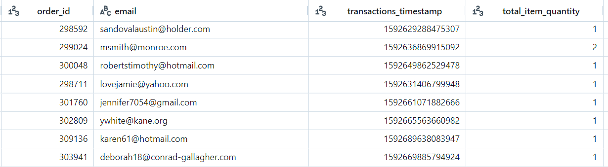
Filtering and Renaming columns from existing tables
CREATE OR REPLACE TABLE purchases AS
SELECT order_id AS id, transaction_timestamp, purchase_revenue_in_usd AS price
FROM sales;
SELECT * FROM purchases
Declare Schema with Generated Columns
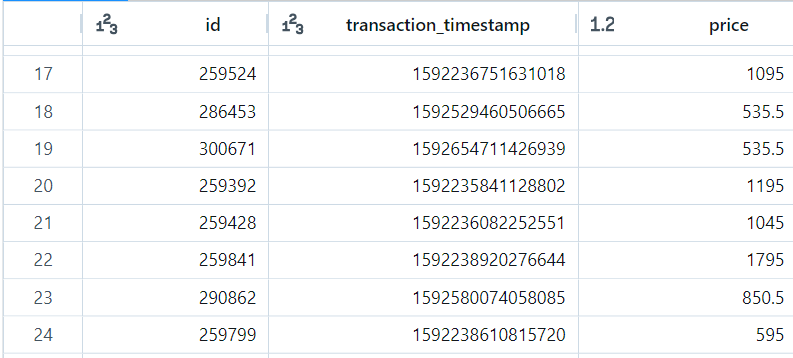 As noted previously, CTAS statements do not support schema declaration. We note above that the timestamp column appears to be some variant of a Unix timestamp, which may not be the most useful for our analysts to derive insights. This is a situation where generated columns would be beneficial.
Generated columns are a special type of column whose values are automatically generated based on a user-specified function over other columns in the Delta table.
CREATE OR REPLACE TABLE purchase_dates (
id STRING,
transaction_timestamp STRING,
price STRING,
date DATE GENERATED ALWAYS AS (
cast(cast(transaction_timestamp/1e6 AS TIMESTAMP) AS DATE))
COMMENT "generated based on `transactions_timestamp` column")
Mergin Data
Check how many records are in purchase_dates?
There are no records in the table.Check how many records are in purchases?
There are 10,510 records.SET spark.databricks.delta.schema.autoMerge.enabled=true;
MERGE INTO purchase_dates a
USING purchases b
ON a.id = b.id
WHEN NOT MATCHED THEN
INSERT *
The SET command ensures that autoMerge is enabled we dont need to REFRESH after merging into the purchase_dates table.
It's important to note that if a field that would otherwise be generated is included in an insert to a table, this insert will fail if the value provided does not exactly match the value that would be derived by the logic used to define the generated column.
Adding Constraints
CHECK constraint
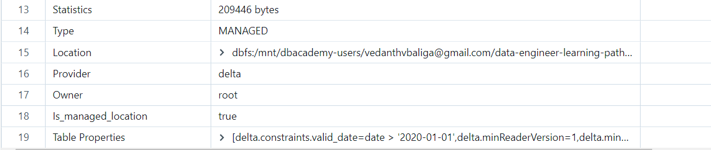Additional Options and Metadata
Our SELECT clause leverages two built-in Spark SQL commands useful for file ingestion:
* current_timestamp() records the timestamp when the logic is executed
* input_file_name() records the source data file for each record in the table
We also include logic to create a new date column derived from timestamp data in the source.
The CREATE TABLE clause contains several options:
* A COMMENT is added to allow for easier discovery of table contents
* A LOCATION is specified, which will result in an external (rather than managed) table
* The table is PARTITIONED BY a date column; this means that the data from each data will exist within its own directory in the target storage location.
CREATE OR REPLACE TABLE users_pii
COMMENT "Contains PII"
LOCATION "${da.paths.working_dir}/tmp/users_pii"
PARTITIONED BY (first_touch_date)
AS
SELECT *,
cast(cast(user_first_touch_timestamp/1e6 AS TIMESTAMP) AS DATE) first_touch_date,
current_timestamp() updated,
input_file_name() source_file
FROM parquet.`${da.paths.datasets}/ecommerce/raw/users-historical/`;
SELECT * FROM users_pii;
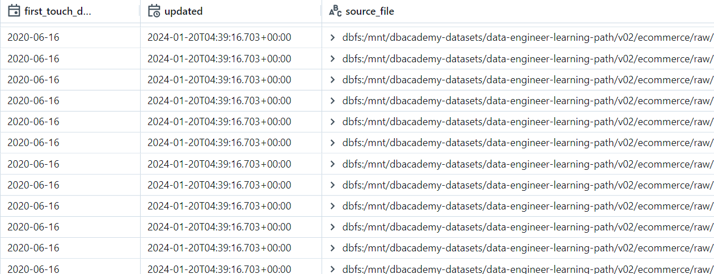
Listing all the files
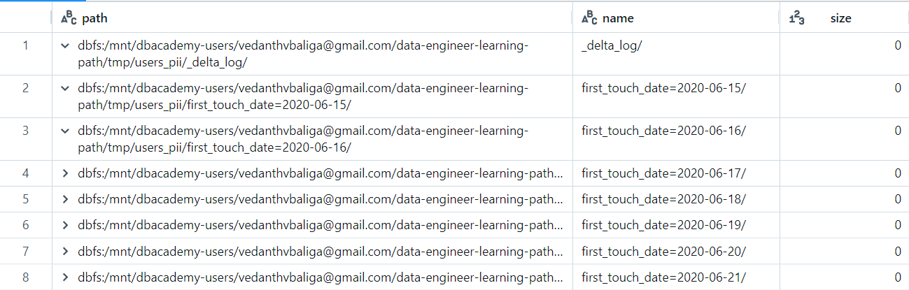
Cloning Delta Lake Tables
Delta Lake has two options for efficiently copying Delta Lake tables.
DEEP CLONE fully copies data and metadata from a source table to a target. This copy occurs incrementally, so executing this command again can sync changes from the source to the target location.
If you wish to create a copy of a table quickly to test out applying changes without the risk of modifying the current table, SHALLOW CLONE can be a good option. Shallow clones just copy the Delta transaction logs, meaning that the data doesn't move.
Loading Data Into Tables
Complete Overwrites
We can use overwrites to atomically replace all of the data in a table. There are multiple benefits to overwriting tables instead of deleting and recreating tables:
-
Overwriting a table is much faster because it doesn’t need to list the directory recursively or delete any files.
-
The old version of the table still exists; can easily retrieve the old data using Time Travel.
-
It’s an atomic operation. Concurrent queries can still read the table while you are deleting the table.
-
Due to ACID transaction guarantees, if overwriting the table fails, the table will be in its previous state.
Spark SQL provides two easy methods to accomplish complete overwrites.
CREATE OR REPLACE TABLE events AS
SELECT * FROM parquet.`${da.paths.datasets}/ecommerce/raw/events-historical`
Reviewing the Table History
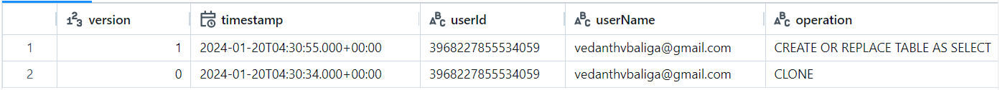Insert Overwrite
INSERT OVERWRITE provides a nearly identical outcome as above: data in the target table will be replaced by data from the query.
-
Can only overwrite an existing table, not create a new one like our CRAS statement.
-
Can overwrite only with new records that match the current table schema -- and thus can be a "safer" technique for overwriting an existing table without disrupting downstream consumers.
-
Can overwrite individual partitions.
Metrics that are defined during Insert Overwrite on running DESCRIBE HISTORY SALES is different.
Whereas a CRAS statement will allow us to completely redefine the contents of our target table, INSERT OVERWRITE will fail if we try to change our schema (unless we provide optional settings).
Uncomment and run the cell below to generate an expected error message.
This gives an error
INSERT OVERWRITE sales
SELECT *, current_timestamp() FROM parquet.`${da.paths.datasets}/ecommerce/raw/sales-historical`
Appending Data
We can use INSERT INTO to atomically append new rows to an existing Delta table. This allows for incremental updates to existing tables, which is much more efficient than overwriting each time.
Append new sale records to the sales table using INSERT INTO
Note that INSERT INTO does not have any built-in guarantees to prevent inserting the same records multiple times. Re-executing the above cell would write the same records to the target table, resulting in duplicate records.
Merging Updates
MERGE INTO target a
USING source b
ON {merge_condition}
WHEN MATCHED THEN {matched_action}
WHEN NOT MATCHED THEN {not_matched_action}
We will use the MERGE operation to update historic users data with updated emails and new users.
Step 1 : Check users_30m parquet
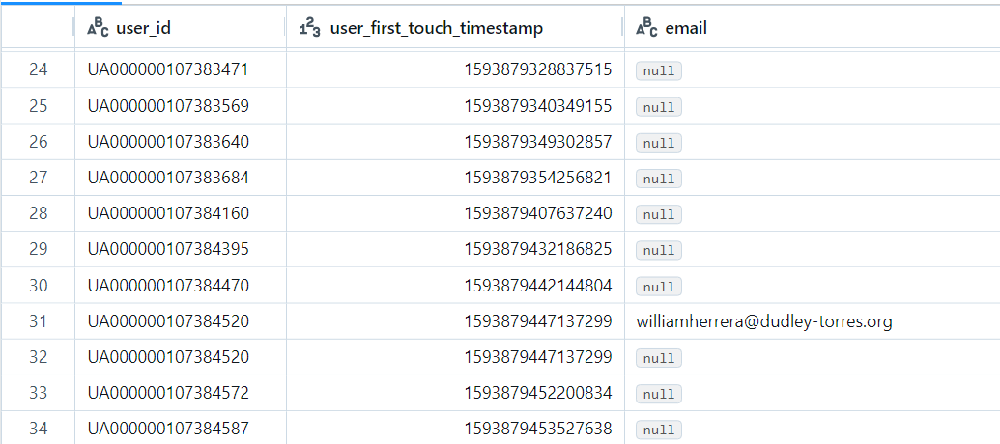
Step 2 : Create view users_update and add data from users_30m dataset
CREATE OR REPLACE TEMP VIEW users_update AS
SELECT *, current_timestamp() AS updated
FROM parquet.`${da.paths.datasets}/ecommerce/raw/users-30m`
Step 3 : Check users and users_updated dataset
Step 4 : If the email in users is null and in users_update is not null then set email in users to users.email and users.updated to users_updated.updated , else insert whatever record is in users_update.
MERGE INTO users a
USING users_update b
ON a.user_id = b.user_id
WHEN MATCHED AND a.email IS NULL AND b.email IS NOT NULL THEN
UPDATE SET email = b.email, updated = b.updated
WHEN NOT MATCHED THEN INSERT *
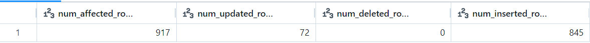
Insert-Only Merge For Data Deduplication ⚠️
A common ETL use case is to collect logs or other every-appending datasets into a Delta table through a series of append operations.
Many source systems can generate duplicate records. With merge, you can avoid inserting the duplicate records by performing an insert-only merge.
This optimized command uses the same MERGE syntax but only provided a WHEN NOT MATCHED clause.
Below, we use this to confirm that records with the same user_id and event_timestamp aren't already in the events table.
MERGE INTO events a
USING events_update b
ON a.user_id = b.user_id AND a.event_timestamp = b.event_timestamp
WHEN NOT MATCHED AND b.traffic_source = 'email' THEN
INSERT *
Logs Example
MERGE INTO logs
USING newDedupedLogs
ON logs.uniqueId = newDedupedLogs.uniqueId
WHEN NOT MATCHED
THEN INSERT *
The dataset containing the new logs needs to be deduplicated within itself. By the SQL semantics of merge, it matches and deduplicates the new data with the existing data in the table, but if there is duplicate data within the new dataset, it is inserted. Hence, deduplicate the new data before merging into the table.
If you know that you may get duplicate records only for a few days, you can optimize your query further by partitioning the table by date, and then specifying the date range of the target table.
MERGE INTO logs
USING newDedupedLogs
ON logs.uniqueId = newDedupedLogs.uniqueId AND logs.date > current_date() - INTERVAL 7 DAYS
WHEN NOT MATCHED AND newDedupedLogs.date > current_date() - INTERVAL 7 DAYS
THEN INSERT *
Incremental Loading
COPY INTO provides SQL engineers an idempotent option to incrementally ingest data from external systems.
Note that this operation does have some expectations: - Data schema should be consistent - Duplicate records should try to be excluded or handled downstream
This operation is potentially much cheaper than full table scans for data that grows predictably.
Versioning, Optimizing and Vacuuming
Create an example table with operations
CREATE TABLE students
(id INT, name STRING, value DOUBLE);
INSERT INTO students VALUES (1, "Yve", 1.0);
INSERT INTO students VALUES (2, "Omar", 2.5);
INSERT INTO students VALUES (3, "Elia", 3.3);
INSERT INTO students
VALUES
(4, "Ted", 4.7),
(5, "Tiffany", 5.5),
(6, "Vini", 6.3);
UPDATE students
SET value = value + 1
WHERE name LIKE "T%";
DELETE FROM students
WHERE value > 6;
CREATE OR REPLACE TEMP VIEW updates(id, name, value, type) AS VALUES
(2, "Omar", 15.2, "update"),
(3, "", null, "delete"),
(7, "Blue", 7.7, "insert"),
(11, "Diya", 8.8, "update");
MERGE INTO students b
USING updates u
ON b.id=u.id
WHEN MATCHED AND u.type = "update"
THEN UPDATE SET *
WHEN MATCHED AND u.type = "delete"
THEN DELETE
WHEN NOT MATCHED AND u.type = "insert"
THEN INSERT *;
This table gets stored in dbfs:/user/hive/warehouse/students
The table is not a relational entity but a set of files stored in the cloud object storage.
There is a directory called _delta_log where transactions on the Delta Lake Tables are stored
For large datasets we would have more parquet files. We can see that there are 4 files currently in students.
So what are the other files present for?
Rather than overwriting or immediately deleting files containing changed data, Delta Lake uses the transaction log to indicate whether or not files are valid in a current version of the table.
Here, we'll look at the transaction log corresponding the MERGE statement above, where records were inserted, updated, and deleted.
display(spark.sql(f"SELECT * FROM json.`{DA.paths.user_db}/students/_delta_log/00000000000000000007.json`"))
The add column contains a list of all the new files written to our table; the remove column indicates those files that no longer should be included in our table.
When we query a Delta Lake table, the query engine uses the transaction logs to resolve all the files that are valid in the current version, and ignores all other data files.
Optimizing and Indexing
When we use large datasets, we may run into problems of a large number of files.
Here since we did many operations that only changed/modified a small number of rows, there were more number of files.
Files will be combined toward an optimal size (scaled based on the size of the table) by using the OPTIMIZE command.
OPTIMIZE will replace existing data files by combining records and rewriting the results.
When executing OPTIMIZE, users can optionally specify one or several fields for ZORDER indexing. While the specific math of Z-order is unimportant, it speeds up data retrieval when filtering on provided fields by colocating data with similar values within data files.
By looking at the output we can motice that 1 file was added and 4 were removed.
As expected, OPTIMIZE created another version of our table, meaning that version 8 is our most current version.
Remember all of those extra data files that had been marked as removed in our transaction log? These provide us with the ability to query previous versions of our table.
These time travel queries can be performed by specifying either the integer version or a timestamp.
NOTE: In most cases, you'll use a timestamp to recreate data at a time of interest. For our demo we'll use version, as this is deterministic (whereas you may be running this demo at any time in the future).
Going back to a previous state
What's important to note about time travel is that we're not recreating a previous state of the table by undoing transactions against our current version; rather, we're just querying all those data files that were indicated as valid as of the specified version.
Rollback to Previous Version
Suppose we are typing a query to manually delete some records from the table and by mistake delete the entire table. We can rollback to the previous version by rolling back the commit.
Cleaning Up Stale Files and Vacuum
Databricks will automatically clean up stale log files (> 30 days by default) in Delta Lake tables. Each time a checkpoint is written, Databricks automatically cleans up log entries older than this retention interval.
While Delta Lake versioning and time travel are great for querying recent versions and rolling back queries, keeping the data files for all versions of large production tables around indefinitely is very expensive (and can lead to compliance issues if PII is present).
If you wish to manually purge old data files, this can be performed with the VACUUM operation.
Uncomment the following cell and execute it with a retention of 0 HOURS to keep only the current version:
By default, VACUUM will prevent you from deleting files less than 7 days old, just to ensure that no long-running operations are still referencing any of the files to be deleted. If you run VACUUM on a Delta table, you lose the ability time travel back to a version older than the specified data retention period. In our demos, you may see Databricks executing code that specifies a retention of 0 HOURS. This is simply to demonstrate the feature and is not typically done in production.
In the following cell, we:
1. Turn off a check to prevent premature deletion of data files
2. Make sure that logging of VACUUM commands is enabled
3. Use the DRY RUN version of vacuum to print out all records to be deleted
To disable the retention duration of 0 safety mechanism just enable these parameters to false and true.
SET spark.databricks.delta.retentionDurationCheck.enabled = false;
SET spark.databricks.delta.vacuum.logging.enabled = true;
By vacuuming the files, we are permanantly deleting the versions of the files and we cannot get it back.
After deletion, only the delta file with log of transactions remains.
Data Pipelines with Delta Live Tables
The Medallion Architecture
The Bronze Layer
The Silver Layer
The Gold Layer
The Multi Hop Architecture
How DLT Solves Problems
Usually the bronze, silver and gold layers will not be in a linear dependency format.
What exactly is a live table?
Streaming Live Tables
Steps to Create a DLT Pipeline
Development Vs Production pipelines
We use job clusters in prod pipelines.
Hence if the pipeline in the prod needs to be run multiple times, then the cluster object has to be created multiple times.
But in the case of dev pipeines, we can keep the clusters running for faster debugging.
Dependencies in the Pipeline
All the tables in the pipeline have the same LIVE schema, so we need to mention the keyword LIVE.events
This feature allows us to migrate the pipelines between databases in the environment.
When we are moving from dev to prod, then just change the schema from dev to prod and we can migrate very quickly.
Data Quality with Expectations
Why Event Logs are Important
Spark Structured Streaming [Ingest From Cloud]
Streaming from an existing table
Usally the table that we are streaming from has data coming in from Kafka/Kinesis.
Parameters in DLT
Change Data Capture
Here the source is city_updates and it must be a stream.
We need unique key like id that can idenitify the data that can be included in teh updates A sequence no is required to apply changes in the current order.
Example Initially cities table is empty, here we can see that berkley was misspelled in the first entry of city_updates table, so when we fix it by keeping the same id and different timestamp its updated in the cities table also.
What does DLT automate?
Creating Pipelines
-
Setup the parameters like in the Delta Live Tables UI Notebook.
-
Then click '+' -> New DLT Pipeline.
-
Create the pipeline using the steps mentioned here
-
This is the final pipeline config link
-
This is the final dashboard
In prod mode we delete the cluster resources after the pipeline completes.
I cannot run the pipelines due to restrictions in student account.
Here is the snapshot of the running pipeline from the course.
Fundamental DLT SQL Syntax
This notebook demonstrates using Delta Live Tables (DLT) to process raw data from JSON files landing in cloud object storage through a series of tables to drive analytic workloads in the lakehouse. Here we demonstrate a medallion architecture, where data is incrementally transformed and enriched as it flows through a pipeline. This notebook focuses on the SQL syntax of DLT rather than this architecture, but a brief overview of the design:
- The bronze table contains raw records loaded from JSON enriched with data describing how records were ingested
- The silver table validates and enriches the fields of interest
- The gold table contains aggregate data to drive business insights and dashboarding
DLT syntax is not intended for interactive execution in a notebook. This notebook will need to be scheduled as part of a DLT pipeline for proper execution.
If you do execute a DLT notebook cell interactively, you should see a message that your statement is syntactically valid. Note that while some syntax checks are performed before returning this message, it is not a guarantee that your query will perform as desired. We'll discuss developing and troubleshooting DLT code later in the course.
Delta Live Tables adapts standard SQL queries to combine DDL (data definition language) and DML (data manipulation language) into a unified declarative syntax.
Table as Query Results
There are two distinct types of persistent tables that can be created with DLT: * Live tables are materialized views for the lakehouse; they will return the current results of any query with each refresh * Streaming live tables are designed for incremental, near-real time data processing
Note that both of these objects are persisted as tables stored with the Delta Lake protocol (providing ACID transactions, versioning, and many other benefits). We'll talk more about the differences between live tables and streaming live tables later in the notebook.
Auto Loader
Databricks has developed the Auto Loader functionality to provide optimized execution for incrementally loading data from cloud object storage into Delta Lake. Using Auto Loader with DLT is simple: just configure a source data directory, provide a few configuration settings, and write a query against your source data.
Auto Loader will automatically detect new data files as they land in the source cloud object storage location, incrementally processing new records without the need to perform expensive scans and recomputing results for infinitely growing datasets.
The cloud_files() method enables Auto Loader to be used natively with SQL. This method takes the following positional parameters:
- The source location, which should be cloud-based object storage
- The source data format, which is JSON in this case
- An arbitrarily sized comma-separated list of optional reader options. In this case, we set
cloudFiles.inferColumnTypestotrue
In the query below, in addition to the fields contained in the source, Spark SQL functions for the current_timestamp() and input_file_name() as used to capture information about when the record was ingested and the specific file source for each record.
CREATE OR REFRESH STREAMING LIVE TABLE orders_bronze
AS SELECT current_timestamp() processing_time, input_file_name() source_file, *
FROM cloud_files("${source}/orders", "json", map("cloudFiles.inferColumnTypes", "true"))
Validating and Enriching the Data
The select statement contains the core logic of your query. In this example, we:
* Cast the field order_timestamp to the timestamp type
* Select all of the remaining fields (except a list of 3 we're not interested in, including the original order_timestamp)
Note that the FROM clause has two constructs that you may not be familiar with:
* The LIVE keyword is used in place of the schema name to refer to the target schema configured for the current DLT pipeline
* The STREAM method allows users to declare a streaming data source for SQL queries
Note that if no target schema is declared during pipeline configuration, your tables won't be published (that is, they won't be registered to the metastore and made available for queries elsewhere).
The target schema can be easily changed when moving between different execution environments, meaning the same code can easily be deployed against regional workloads or promoted from a dev to prod environment without needing to hard-code schema names.
CREATE OR REFRESH STREAMING LIVE TABLE orders_silver
(CONSTRAINT valid_date EXPECT (order_timestamp > "2021-01-01") ON VIOLATION FAIL UPDATE)
COMMENT "Append only orders with valid timestamps"
TBLPROPERTIES ("quality" = "silver")
AS SELECT timestamp(order_timestamp) AS order_timestamp, * EXCEPT (order_timestamp, source_file, _rescued_data)
FROM STREAM(LIVE.orders_bronze)
Here, in the end of the statement, we have LIVE.orders_bronze. We have to specify LIVE. because it refers to the target schema that we defined before in the configuration settings.
The table order_silver is a STREAMING table becuase it takes in data from another streaming table orders_bronze
If the expectation fails, then we can have two main choices UPDATE will drop all the rows that were part of the insertion even if only one row fails the constraint.
If we use ROW then it drops only the row that failed the update
Live Tables vs. Streaming Live Tables ⚠️
Below are some of the differences between these types of tables.
Live Tables
- Always "correct", meaning their contents will match their definition after any update.
- Return same results as if table had just been defined for first time on all data.
- Should not be modified by operations external to the DLT Pipeline (you'll either get undefined answers or your change will just be undone).
Streaming Live Tables
- Only supports reading from "append-only" streaming sources.
- Only reads each input batch once, no matter what (even if joined dimensions change, or if the query definition changes, etc).
- Can perform operations on the table outside the managed DLT Pipeline (append data, perform GDPR, etc).
A live table or view always reflects the results of the query that defines it, including when the query defining the table or view is updated, or an input data source is updated. Like a traditional materialized view, a live table or view may be entirely computed when possible to optimize computation resources and time.
A streaming live table or view processes data that has been added only since the last pipeline update. Streaming tables and views are stateful; if the defining query changes, new data will be processed based on the new query and existing data is not recomputed.
Creating The Gold Layer
CREATE OR REFRESH LIVE TABLE orders_by_date
AS SELECT date(order_timestamp) AS order_date, count(*) AS total_daily_orders
FROM LIVE.orders_silver
GROUP BY date(order_timestamp)
Orders Pipeline in Python
Importing the libraries
Creating the Bronze Table
Delta Live Tables introduces a number of new Python functions that extend familiar PySpark APIs.
At the heart of this design, the decorator @dlt.table is added to any Python function that returns a Spark DataFrame. (NOTE: This includes Koalas DataFrames, but these won't be covered in this course.)
If you're used to working with Spark and/or Structured Streaming, you'll recognize the majority of the syntax used in DLT. The big difference is that you'll never see any methods or options for DataFrame writers, as this logic is handled by DLT.
As such, the basic form of a DLT table definition will look like:
@dlt.table
def <function-name>():
return (<query>)
@dlt.table
def orders_bronze():
return (
spark.readStream
.format("cloudFiles")
.option("cloudFiles.format", "json")
.option("cloudFiles.inferColumnTypes", True)
.load(f"{source}/orders")
.select(
F.current_timestamp().alias("processing_time"),
F.input_file_name().alias("source_file"),
"*"
)
)
Creating the Silver Table
@dlt.table(
comment = "Append only orders with valid timestamps",
table_properties = {"quality": "silver"})
@dlt.expect_or_fail("valid_date", F.col("order_timestamp") > "2021-01-01")
def orders_silver():
return (
dlt.read_stream("orders_bronze")
.select(
"processing_time",
"customer_id",
"notifications",
"order_id",
F.col("order_timestamp").cast("timestamp").alias("order_timestamp")
)
)
Defining the Gold Table
@dlt.table
def orders_by_date():
return (
dlt.read("orders_silver")
.groupBy(F.col("order_timestamp").cast("date").alias("order_date"))
.agg(F.count("*").alias("total_daily_orders"))
)
Customers Pipeline
Objectives
- Raw records represent change data capture (CDC) information about customers
- The bronze table again uses Auto Loader to ingest JSON data from cloud object storage
- A table is defined to enforce constraints before passing records to the silver layer
APPLY CHANGES INTOis used to automatically process CDC data into the silver layer as a Type 1 slowly changing dimension (SCD) table- A gold table is defined to calculate an aggregate from the current version of this Type 1 table
- A view is defined that joins with tables defined in another notebook
What are Slowly Changing Dimensions?
A slowly changing dimension (SCD) in data management and data warehousing is a dimension which contains relatively static data which can change slowly but unpredictably, rather than according to a regular schedule. Some examples of typical slowly changing dimensions are entities such as names of geographical locations, customers, or products.
Type 1 SCD
Ingest Data with Auto Loader
CREATE OR REFRESH STREAMING LIVE TABLE customers_bronze
COMMENT "Raw data from customers CDC feed"
AS SELECT current_timestamp() processing_time, input_file_name() source_file, *
FROM cloud_files("${source}/customers", "json")
Quality Checks
The query below demonstrates: * The 3 options for behavior when constraints are violated * A query with multiple constraints * Multiple conditions provided to one constraint * Using a built-in SQL function in a constraint
About the data source:
* Data is a CDC feed that contains INSERT, UPDATE, and DELETE operations.
* Update and insert operations should contain valid entries for all fields.
* Delete operations should contain NULL values for all fields other than the timestamp, customer_id, and operation fields.
In order to ensure only good data makes it into our silver table, we'll write a series of quality enforcement rules that ignore the expected null values in delete operations.
CREATE STREAMING LIVE TABLE customers_bronze_clean
(CONSTRAINT valid_id EXPECT (customer_id IS NOT NULL) ON VIOLATION FAIL UPDATE,
CONSTRAINT valid_operation EXPECT (operation IS NOT NULL) ON VIOLATION DROP ROW,
CONSTRAINT valid_name EXPECT (name IS NOT NULL or operation = "DELETE"),
CONSTRAINT valid_address EXPECT (
(address IS NOT NULL and
city IS NOT NULL and
state IS NOT NULL and
zip_code IS NOT NULL) or
operation = "DELETE"),
CONSTRAINT valid_email EXPECT (
rlike(email, '^([a-zA-Z0-9_\\-\\.]+)@([a-zA-Z0-9_\\-\\.]+)\\.([a-zA-Z]{2,5})$') or
operation = "DELETE") ON VIOLATION DROP ROW)
AS SELECT *
FROM STREAM(LIVE.customers_bronze)
Requirements that APPLY CHANGES INTO Provides
-
Performs incremental/streaming ingestion of CDC data.
-
Provides simple syntax to specify one or many fields as the primary key for a table.
-
Default assumption is that rows will contain inserts and updates.
-
Can optionally apply deletes.
-
Automatically orders late-arriving records using user-provided sequencing key.
-
Uses a simple syntax for specifying columns to ignore with the
EXCEPTkeyword. -
Will default to applying changes as Type 1 SCD.
Processing CDC Data From bronze_cleaned to customers_silver table
-
Creates the
customers_silvertable;APPLY CHANGES INTOrequires the target table to be declared in a separate statement. -
Identifies the
customers_silvertable as the target into which the changes will be applied. -
Specifies the table
customers_bronze_cleanas the streaming source. -
Identifies the
customer_idas the primary key. -
Specifies that records where the
operationfield isDELETEshould be applied as deletes. -
Specifies the
timestampfield for ordering how operations should be applied. -
Indicates that all fields should be added to the target table except
operation,source_file, and_rescued_data.
CREATE OR REFRESH STREAMING LIVE TABLE customers_silver;
APPLY CHANGES INTO LIVE.customers_silver` `
FROM STREAM(LIVE.customers_bronze_clean)
KEYS (customer_id)
APPLY AS DELETE WHEN operation = "DELETE"
SEQUENCE BY timestamp
COLUMNS * EXCEPT (operation, source_file, _rescued_data)
Querying Tables with Applied Changes
Why Downstream Table Can't Perform Streaming Operations?
While the target of our operation in the previous cell was defined as a streaming live table, data is being updated and deleted in this table (and so breaks the append-only requirements for streaming live table sources). As such, downstream operations cannot perform streaming queries against this table.
This pattern ensures that if any updates arrive out of order, downstream results can be properly recomputed to reflect updates. It also ensures that when records are deleted from a source table, these values are no longer reflected in tables later in the pipeline.
CREATE LIVE TABLE customer_counts_state
COMMENT "Total active customers per state"
AS SELECT state, count(*) as customer_count, current_timestamp() updated_at
FROM LIVE.customers_silver
GROUP BY state
Views in DLT
The query below defines a DLT view by replacing TABLE with the VIEW keyword.
Views in DLT differ from persisted tables, and can optionally be defined as STREAMING.
Views have the same update guarantees as live tables, but the results of queries are not stored to disk.
Unlike views used elsewhere in Databricks, DLT views are not persisted to the metastore, meaning that they can only be referenced from within the DLT pipeline they are a part of. (This is similar scoping to temporary views in most SQL systems.)
Views can still be used to enforce data quality, and metrics for views will be collected and reported as they would be for tables.
Joining and Referencing Tables
In the query below, we create a new view by joining the silver tables from our orders and customers datasets. Note that this view is not defined as streaming; as such, we will always capture the current valid email for each customer, and will automatically drop records for customers after they've been deleted from the customers_silver table.
Final Pipeline
Python vs SQL
Pipeline Results and Internals of DLT
Checking List of All Tables
Querying Orders Bronze Table
Recall thatorders_bronze was defined as a streaming live table in DLT, but our results here are static.
Because DLT uses Delta Lake to store all tables, each time a query is executed, we will always return the most recent version of the table. But queries outside of DLT will return snapshot results from DLT tables, regardless of how they were defined.
Querying customers_silver table
This table dowes not have the additional fields like __TimeStamp, __deleteVersion and __updateVersion.
The customers_silver table is actually a view oof another hidden table called __apply_changes_storage_customer_silver.
This is seen when we run the describe command.
Its being read from the __apply_changes_storage_customer_silver table
Checking the __apply_changes_storage_customer_silver table records
What is in the storage location?
The autoloader and checkpoint directories contain data used to manage incremental data processing with Structured Streaming.
The system directory captures events associated with the pipeline.
Event Logs
Querying the Event Logs gives us lot of information
Pipeline Event Logs Deep Dive
Query the Event Log
event_log_path = f"{DA.paths.storage_location}/system/events"
event_log = spark.read.format('delta').load(event_log_path)
event_log.createOrReplaceTempView("event_log_raw")
display(event_log)
The dataset includes an id for each transaction performed.
Check the Latest Update Id
latest_update_id = spark.sql("""
SELECT origin.update_id
FROM event_log_raw
WHERE event_type = 'create_update'
ORDER BY timestamp DESC LIMIT 1""").first().update_id
print(f"Latest Update ID: {latest_update_id}")
# Push back into the spark config so that we can use it in a later query.
spark.conf.set('latest_update.id', latest_update_id)
Perform Audit Logging
Events related to running pipelines and editing configurations are captured as user_action.
Yours should be the only user_name for the pipeline you configured during this lesson.
SELECT timestamp, details:user_action:action, details:user_action:user_name
FROM event_log_raw
WHERE event_type = 'user_action'
Examining Data Lineage
SELECT details:flow_definition.output_dataset, details:flow_definition.input_datasets
FROM event_log_raw
WHERE event_type = 'flow_definition' AND
origin.update_id = '${latest_update.id}'
DLT provides built-in lineage information for how data flows through your table.
While the query below only indicates the direct predecessors for each table, this information can easily be combined to trace data in any table back to the point it entered the lakehouse.
Checking Data Quality Metrics ⚠️
If you define expectations on datasets in your pipeline, the data quality metrics are stored in the details:flow_progress.data_quality.expectations object. Events containing information about data quality have the event type flow_progress. The following example queries the data quality metrics for the last pipeline update:
SELECT row_expectations.dataset as dataset,
row_expectations.name as expectation,
SUM(row_expectations.passed_records) as passing_records,
SUM(row_expectations.failed_records) as failing_records
FROM
(SELECT explode(
from_json(details :flow_progress :data_quality :expectations,
"array<struct<name: string, dataset: string, passed_records: int, failed_records: int>>")
) row_expectations
FROM event_log_raw
WHERE event_type = 'flow_progress' AND
origin.update_id = '${latest_update.id}'
)
GROUP BY row_expectations.dataset, row_expectations.name
Databricks Workflows
Workflows vs DLT Pipelines
Workflows orchestrate all types of tasks(any kind of sql,spark and ml models)
DLT is used to create streaming data pipelines using Python/SQL. It has quality controls and monitoring.
These two can be integrated. DLT pipeline can be executed as a task in a workflow.
Differences
Use Cases
Features of Workflows
How to Leverage Workflows?
Common Workflow Patterns
The Fan-Out Pattern can be used when we have a single API from which data comes in but there are various data stores that the data must be stored in different shapes.
Example Pipeline
Workflow Job Components
Shared Job Clusters provide flexibility by providing the ability to use same job cluster for more than one task.
Defining Tasks
Scheduling and Alerts
Access Controls
Job Rrun History
Repairing Jobs
In the above figure we can only rerun from the Silvers job and not the bronze one since its executed properly.
Demo of Workflow
Go to Workflows > Create new workflow
Here is the workflow run from the course. I cant run it on my workkspace due to resource constraints.
Go to the same notebookDE 5.1.1 and Run the script under Generate Pipeline
Creating a DLT Pipeline in the Workflow
For more info on workflows check this
Unity Catalog
-
There is something called Unity Catalog Metastore that is different from the Hive Metastore and has advanced data lineage, security and auditing capabilities.
-
Metadata like data about the tables, columns and ACL for the objects is stored in the Control Plane
- Data related objects that are managed by the metastore are stored in the Cloud Storage.
- Once we connect to Unity Catalog, it connects the Hive Metastore as a special catalog named
hive_metastore - Assets within the hive metastore can be easily referenced from Unity Catalog.
- Unity Catalog won't control access to the hive metastore but we can use the traditional ACLs
Components of Unity Catalog
- Catalogs - Containers that only contain schemas
- Schema - Its a container for data bearing assets.
- Tables - They have two main information associated with them : data and metadata
- Views - perform SQL transformation of other tables or views. They do not have the ability to modify the other tables or views.
- Storage Credential - Allows Unity Catalog to access the external cloud storage via access creds.
- External Location - Allow users to divide the containers into smaller pieces and exercise control over it, They are mainly used to support external tables.
- Shares - They are used to define a read only logical collection of tables. These can be shared with a data reader outside the org.
Unity Catalog Architecture

- In case before UC, we should provide different ACL's for each workspace and it must be shared.
- If the compute resources are not properly configured then the access rules can be bypassed very easily.
- In case of Unity Catalog, we can take out the entire User and Config Management outside workspaces.
- We just need to take care of the Compute Resources in the Workspaces. Any changes in the UC is automatically reflected in the Workspaces.
Query Lifecycle
- Queries can be issued via a data warehouse or BI tool. The compute resource begins processing the query.
- The UC then accepts the query, logs it and checks the security constraints.
- For each object of the query, UC assumes the IAM role or service principal governing the object as provided by a cloud admin.
- UC then generates a short term token and returns that token to the principal with the access url.
- Now the principal can request data using the URL from the cloud storage with the token.
- Data is then sent back from the cloud storage.
- Last mile row or column filtering can now be applied on the sql warehouse data.

Compute Resources and Unity Catalog

- Dynamic Views are not supported on Single User Cluster.
- Cluster level installations don't work on Shared Clusters
- Dynamic Views offer row and column protection.

Roles and Admins in Unity Catalog

We can assign the roles via access connectors and there is no manual intervention needed.

- Account and Metastore admins have full access to grant privileges and have the access to data objects.
- The Metastore admins have same privileges as Cloud Admin but only within the metastore that they own.
- There is also a Data Owner that controls and owns only the data objects that they created.

Identities in Unity Catalog
- Service Principal is an individual identity for use with automated tools to run jobs and applications.
- They are assigned a name by the creator but are uniquely identified by the Global Unique Identifier ID.
- An access token can be used by the Service Principal using an API to access the data or use Databricks workflows.
- The Service Principals can be elevated to have admin privileges.

Groups in Unity Catalog
- Basically its a set of individual users gathered in one place to simplify the access.
-
Any grants given to group are inherited by the users.
-
Groups can define who can access what data objects and how simplifying data governance policies.

Multiple Nested Groups

Identity Federation

- There are two main identities, account identity and workspace identity.
- They are linked by a common identity like the email id of a user.
- So its important to have the same email in Account and Workspace, otherwise users can login to the workspace using one email but may not be able to access any data.
- To simplify this identity federation is used where the users, groups and their access controls are defined once in the Account Console and then they can be assigned to one or more workspaces as needed.
Data Access Privileges
The access privileges are not implied or imperative in the case of Databricks.
CREATE - Allows us to create child data objects like views, table and functions within the catalog.
USAGE - Allows the person to traverse the child objects. To access a table we need usage access on the containing schema and the catalog.
The privileges are propagated to child objects. For example, granting privileges to a catalog gives us the access to all the tables within the catalog.
SELECT - allows querying of the table.
MODIFY - allows modification of the table.
VIEWS - users don't need access to the underlying source tables to access the view.
EXECUTE - allows us to use the functions.
STORAGE CREDENTIALS and EXTERNAL LOCATION - support three privileges, READ FILES, WRITE FILES and CREATE TABLE.
SHARE - supports select statements only.

Privilege on various objects


Dynamic Views
Dropping objects in any scenario can be done only by the owner.
External Locations and Storage Credentials
We can refer to a single storage credential from various external locations.
Because there can be many external locations that use the same storage credentials, DB recommends defining access using the external locations.

Best Practices using Unity Catalog
- One Unity Catalog per region
- We can implement table sharing across many regions. But when we are sharing the tables, they appear as read only in the destination metastore.
- ACL's are not implemented in Region B, so they need to be setup separately.
- It may be costly to do this because data is queried across regions, we can rather ingest the data into region B and then query it.

Data Segregation
- We should not use Metastores to segregate data, because switching metastores needs workspace reassignment so the access and creds get spread across several roles in the workspaces.
- Metastores are actually a thin layer that references the meta data cloud storage object. Using UC container constructs [schemas and catalogs], enables the entire access and credentials to be handled by the metastore admins and the other catalog and workspace admins dont need to get involved.

Methods of Data Segregation

- Workspace only identities will not have access to data access within unity catalog.
- But in June 2022, DB elevated all workspace and service principal users to account level privileges.
- No one should run production jobs in the prod environment. This risks overwriting the prod data. Users should never be allowed modify access on prod tables.
Storage Credential vs External Location
The same access credentials that are part of the storage location is provided to the External Locations.

Unity Catalog
-
There is something called Unity Catalog Metastore that is different from the Hive Metastore and has advanced data lineage, security and auditing capabilities.
-
Metadata like data about the tables, columns and ACL for the objects is stored in the Control Plane
- Data related objects that are managed by the metastore are stored in the Cloud Storage.
- Once we connect to Unity Catalog, it connects the Hive Metastore as a special catalog named
hive_metastore - Assets within the hive metastore can be easily referenced from Unity Catalog.
- Unity Catalog won't control access to the hive metastore but we can use the traditional ACLs
Components of Unity Catalog
- Catalogs - Containers that only contain schemas
- Schema - Its a container for data bearing assets.
- Tables - They have two main information associated with them : data and metadata
- Views - perform SQL transformation of other tables or views. They do not have the ability to modify the other tables or views.
- Storage Credential - Allows Unity Catalog to access the external cloud storage via access creds.
- External Location - Allow users to divide the containers into smaller pieces and exercise control over it, They are mainly used to support external tables.
- Shares - They are used to define a read only logical collection of tables. These can be shared with a data reader outside the org.
Unity Catalog Architecture
- In case before UC, we should provide different ACL's for each workspace and it must be shared.
- If the compute resources are not properly configured then the access rules can be bypassed very easily.
- In case of Unity Catalog, we can take out the entire User and Config Management outside workspaces.
- We just need to take care of the Compute Resources in the Workspaces. Any changes in the UC is automatically reflected in the Workspaces.
Query Lifecycle
- Queries can be issued via a data warehouse or BI tool. The compute resource begins processing the query.
- The UC then accepts the query, logs it and checks the security constraints.
- For each object of the query, UC assumes the IAM role or service principal governing the object as provided by a cloud admin.
- UC then generates a short term token and returns that token to the principal with the access url.
- Now the principal can request data using the URL from the cloud storage with the token.
- Data is then sent back from the cloud storage.
- Last mile row or column filtering can now be applied on the sql warehouse data.
Compute Resources and Unity Catalog
- Dynamic Views are not supported on Single User Cluster.
- Cluster level installations don't work on Shared Clusters
- Dynamic Views offer row and column protection.
Roles and Admins in Unity Catalog
We can assign the roles via access connectors and there is no manual intervention needed.
- Account and Metastore admins have full access to grant privileges and have the access to data objects.
- The Metastore admins have same privileges as Cloud Admin but only within the metastore that they own.
- There is also a Data Owner that controls and owns only the data objects that they created.
Identities in Unity Catalog
- Service Principal is an individual identity for use with automated tools to run jobs and applications.
- They are assigned a name by the creator but are uniquely identified by the Global Unique Identifier ID.
- An access token can be used by the Service Principal using an API to access the data or use Databricks workflows.
- The Service Principals can be elevated to have admin privileges.
Groups in Unity Catalog
- Basically its a set of individual users gathered in one place to simplify the access.
-
Any grants given to group are inherited by the users.
-
Groups can define who can access what data objects and how simplifying data governance policies.
Multiple Nested Groups
Identity Federation
- There are two main identities, account identity and workspace identity.
- They are linked by a common identity like the email id of a user.
- So its important to have the same email in Account and Workspace, otherwise users can login to the workspace using one email but may not be able to access any data.
- To simplify this identity federation is used where the users, groups and their access controls are defined once in the Account Console and then they can be assigned to one or more workspaces as needed.
Data Access Privileges
The access privileges are not implied or imperative in the case of Databricks.
CREATE - Allows us to create child data objects like views, table and functions within the catalog.
USAGE - Allows the person to traverse the child objects. To access a table we need usage access on the containing schema and the catalog.
The privileges are propagated to child objects. For example, granting privileges to a catalog gives us the access to all the tables within the catalog.
SELECT - allows querying of the table.
MODIFY - allows modification of the table.
VIEWS - users don't need access to the underlying source tables to access the view.
EXECUTE - allows us to use the functions.
STORAGE CREDENTIALS and EXTERNAL LOCATION - support three privileges, READ FILES, WRITE FILES and CREATE TABLE.
SHARE - supports select statements only.
Privilege on various objects
Dynamic Views
Dropping objects in any scenario can be done only by the owner.
External Locations and Storage Credentials
We can refer to a single storage credential from various external locations.
Because there can be many external locations that use the same storage credentials, DB recommends defining access using the external locations.
Best Practices using Unity Catalog
- One Unity Catalog per region
- We can implement table sharing across many regions. But when we are sharing the tables, they appear as read only in the destination metastore.
- ACL's are not implemented in Region B, so they need to be setup separately.
- It may be costly to do this because data is queried across regions, we can rather ingest the data into region B and then query it.
Data Segregation
- We should not use Metastores to segregate data, because switching metastores needs workspace reassignment so the access and creds get spread across several roles in the workspaces.
- Metastores are actually a thin layer that references the meta data cloud storage object. Using UC container constructs [schemas and catalogs], enables the entire access and credentials to be handled by the metastore admins and the other catalog and workspace admins dont need to get involved.
Methods of Data Segregation
- Workspace only identities will not have access to data access within unity catalog.
- But in June 2022, DB elevated all workspace and service principal users to account level privileges.
- No one should run production jobs in the prod environment. This risks overwriting the prod data. Users should never be allowed modify access on prod tables.
Storage Credential vs External Location
The same access credentials that are part of the storage location is provided to the External Locations.
Practical Example
I cannot create metastore in my account due to privilege problems. Just check the code to understand. Here is a video from the course regarding the example.
Create a New Catalog
Let's create a new catalog in our metastore. The variable ${DA.my_new_catalog} was displayed by the setup cell above, containing a unique string generated based on your username.
Run the CREATE statement below, and click the Data icon in the left sidebar to confirm this new catalog was created.
Selecting the Default Catalog
SQL developers will probably also be familiar with the USE statement to select a default schema, thereby shortening queries by not having to specify it all the time. To extend this convenience while dealing with the extra level in the namespace, Unity Catalog augments the language with two additional statements, shown in the examples below:
USE CATALOG mycatalog;
USE SCHEMA myschema;
Let's select the newly created catalog as the default. Now, any schema references will be assumed to be in this catalog unless explicitly overridden by a catalog reference.
Create a New Schema
Next, let's create a schema in this new catalog. We won't need to generate another unique name for this schema, since we're now using a unique catalog that is isolated from the rest of the metastore. Let's also set this as the default schema. Now, any data references will be assumed to be in the catalog and schema we created, unless explicitely overridden by a two- or three-level reference.
Run the code below, and click the Data icon in the left sidebar to confirm this schema was created in the new catalog we created.
Set Up Tables and Views
With all the necessary containment in place, let's set up tables and views. For this example, we'll use mock data to create and populate a silver managed table with synthetic patient heart rate data and a gold view that averages heart rate data per patient on a daily basis.
Run the cells below, and click the Data icon in the left sidebar to explore the contents of the example schema. Note that we don't need to specify three levels when specifying the table or view names below, since we selected a default catalog and schema.
CREATE OR REPLACE TABLE heartrate_device (device_id INT, mrn STRING, name STRING, time TIMESTAMP, heartrate DOUBLE);
INSERT INTO heartrate_device VALUES
(23, "40580129", "Nicholas Spears", "2020-02-01T00:01:58.000+0000", 54.0122153343),
(17, "52804177", "Lynn Russell", "2020-02-01T00:02:55.000+0000", 92.5136468131),
(37, "65300842", "Samuel Hughes", "2020-02-01T00:08:58.000+0000", 52.1354807863),
(23, "40580129", "Nicholas Spears", "2020-02-01T00:16:51.000+0000", 54.6477014191),
(17, "52804177", "Lynn Russell", "2020-02-01T00:18:08.000+0000", 95.033344842);
SELECT * FROM heartrate_device
CREATE OR REPLACE VIEW agg_heartrate AS (
SELECT mrn, name, MEAN(heartrate) avg_heartrate, DATE_TRUNC("DD", time) date
FROM heartrate_device
GROUP BY mrn, name, DATE_TRUNC("DD", time)
);
SELECT * FROM agg_heartrate
Querying the table above works as expected since we are the data owner. That is, we have ownership of the data object we're querying. Querying the view also works because we are the owner of both the view and the table it's referencing. Thus, no object-level permissions are required to access these resources.
The accounts_user_group
In accounts with Unity Catalog enabled, there is an account users group. This group contains all users that have been assigned to the workspace from the Databricks account. We are going to use this group to show how data object access can be different for users in different groups.
Grant Access to Data Objects
Unity Catalog employs an explicit permission model by default; no permissions are implied or inherited from containing elements. Therefore, in order to access any data objects, users will need USAGE permission on all containing elements; that is, the containing schema and catalog.
Now let's allow members of the account users group to query the gold view. In order to do this, we need to grant the following permissions: 1. USAGE on the catalog and schema 1. SELECT on the data object (e.g. view)
We need the USAGE command to actually make sure that the user reaches the point through the tree level structure to get to where the catalog is stored.
Grant Privileges
GRANT USAGE ON CATALOG ${DA.my_new_catalog} TO `account users`;
GRANT USAGE ON SCHEMA example TO `account users`;
GRANT SELECT ON VIEW agg_heartrate to `account users`
Generate a Query and access the data
Can we query the silver table?
Back in the same query in the Databricks SQL session, let's replace gold with silver and run the query. This time it fails, because we never set up permissions on the silver table.
Querying gold works because the query represented by a view is essentially executed as the owner of the view. This important property enables some interesting security use cases; in this way, views can provide users with a restricted view of sensitive data, without providing access to the underlying data itself. We will see more of this shortly.
Granting Access to UDF
CREATE OR REPLACE FUNCTION mask(x STRING)
RETURNS STRING
RETURN CONCAT(REPEAT("*", LENGTH(x) - 2), RIGHT(x, 2)
);
SELECT mask('sensitive data') AS data
The above function masks the last two characters of the string sensitive_data
Now let's grant access to the function
Run the function using
Now run the query in the SQL Editor you can see that the last two characters are redacted.
Data Engineering Professional Learning Pathway
Top Level Concepts
This is the course material that's part of Databricks AI Summit Learning Festival
Advantages of Stream Processing
Stream Processing Architecture
Challenges with Streaming
What is Structured Streaming?
Unbounded Tables For Streaming
Execution Mode in Streaming
Anatomy of a Streaming Query
Source, Input Tables, Result tables and storage layer in streaming.
Step 1: Read data from any streaming source
Step 2 : Transform the data
Step 3 : Sink
Step 4 : Trigger Mechanism
Checkpoint is there to ensure fault tolerance.
The API definitions for batch and streaming is the same.
Types of Triggers
Output Modes
Demo : Streaming Data Query
"readStream" instead of "read" the tranformations are the same.
Data Metrics
Writing Data to a Delta Lake Sink
We can see the status of the query
... and also see the metrics from the previous query
Using Delta tables as a Streaming Source
Tuning the parameters for a delta streaming source
Streaming to a delta table
For any arbitary aggregations on streaming data, use complete mode.
Aggregations, Time Windows and Watermark
Types of Stream Processing
There are two types of Stream Processing
- Stateless
- Stateful
Intermediate State to Keep Track
Aggregations over Time Windows
Event Time vs Processing Time
The unbounded tables must always be processed in order.
Tumbling Window vs Sliding Window
Sliding Window Example
Here is a 10 min window with 5 min overlap
Challenges with Sliding Window
There is a lot of Memory Pressure with using sliding window because all the data is stored in executor memory.
We can tackle this by storing the data off heap
Watermarking / Late Threshold
Watermarking is a technique that basically tells how long is too late?
For example if data record with id = 100 came in now at 12:05am then if we keep window as 10 min then we will wait until 12:15am and if no data arrives for that id we purge the state.
The dog record in the below pic has eventTime of 12:04 but its beyond our 10 min window (12:05 - 12:15) so we dont consider that record and miss the count.
Late arriving data state is dropped and we save memory
Demo : Time window aggregations with Watermarking
Read and Process Streaming Source
Output
Windowing
Goal is to find the revenue in USD in a 60 min time window.
- Here the window is of 60 min but we add a watermark of 90 min to cater to any late arriving data.
- Then we group by both eventTimestamp and the city to find the revenue.
Output
Writing Data in Append Mode
The catch with append mode is that the data is not going to be written into the sink until and unless we finish the hour (window duration)
The availableNow trigger processes all the data currently available in the source and then stops. It’s like a one-time cleanup of everything in your inbox.
writeStreamAvailableNow = (
df.writeStream.format("delta")
.option("checkpointLocation", f"{checkpoint_location}")
.trigger(availableNow=True)
.outputMode("append")
.queryName("AvailableNow")
.toTable("default.streaming_circuits")
)
Result: here, the query processes all data available in the source and then terminates. This is a great choice when you want to process data in a “stream-like” fashion but only once.
There is always some delay between creating streaming table and the commits happening to it.
Writing Data in update mode
Step 1 : Create a table
Step 2 : Write a MERGE Query to merge the data based on start and end time
Data Ingestion Patterns
How to deal with ephemeral data?
We can deal with transient data by creating STREAMING LIVE tables that contain raw data from source.
Then we can update other tables like silver tables (also live) with transformations.
Simplex vs Multiplex Ingestion
Dont use Kafka as bronze table
Solution
- First simplex and store data in bronze
- Then multiplex it and transform into multiple silver tables.
DLT Demo
Autoloader for bronze ingestion
Here are the conf parameters
This is the syntax of a dlt table.
- we first define the parameters of the table and dont allow reset on it.
- now we stream data from cloud files using autoloader.
Final dlt pipeline
Transforming the data
Quality Enforcement in DLT
Quality enforcement in Bronze
Quality enforcement in Silver
Schema Enforcement Patterns
Alternate Enforcement Methods
Defining Expectations in DLT
Demo: Enforcing Validations on the Data
Quarantining Records
We say expect all or drop which indicates that all rules must pass else drop records.
Now we can use those rules
The Data Quality metrics in the UI
Databricks Data Privacy
Storing Data Securely
Regulatory Compliance
GDPR and CCPA
Databricks Simplifying Compliance
3 Key Aspects of Data Privacy
Advanced Unity Catalog Concepts
Components of Unity Catalog
How unity catalog provides single governance model?
Access Control Lists
Managing ACLs
Tagging and AI Docs
Search objects with tags
Fine Grained Access Control
Dynamic Views Fine Grained Access Control
current_user
is_member()
Row level security and Column Masking
What are row filters?
Row filters allow you to apply a filter to a table so that queries return only rows that meet the filter criteria. You implement a row filter as a SQL user-defined function (UDF). Python and Scala UDFs are also supported, but only when they are wrapped in SQL UDFs.
What are column masks? Column masks let you apply a masking function to a table column. The masking function evaluates at query runtime, substituting each reference of the target column with the results of the masking function. For most use cases, column masks determine whether to return the original column value or redact it based on the identity of the invoking user. Column masks are expressions written as SQL UDFs or as Python or Scala UDFs wrapped in SQL UDFs.
Each table column can have only one masking function applied to it. The masking function takes the unmasked value of the column as input and returns the masked value as its result. The return value of the masking function should be the same type as the column being masked. The masking function can also take additional columns as input parameters and use those in its masking logic.
Examples
This example creates a SQL user-defined function that applies to members of the group admin in the region US.
When this sample function is applied to the sales table, members of the admin group can access all records in the table. If the function is called by a non-admin, the RETURN_IF condition fails and the region='US' expression is evaluated, filtering the table to only show records in the US region.
CREATE FUNCTION us_filter(region STRING)
RETURN IF(IS_ACCOUNT_GROUP_MEMBER('admin'), true, region='US');
Column Mask Examples
CREATE FUNCTION ssn_mask(ssn STRING)
RETURN CASE WHEN is_account_group_member('HumanResourceDept') THEN ssn ELSE '***-**-****' END;
--Create the `users` table and apply the column mask in a single step:
CREATE TABLE users (
name STRING,
ssn STRING MASK ssn_mask);
Filtering on unspecified columns
DROP FUNCTION IF EXISTS row_filter;
CREATE FUNCTION row_filter()
RETURN EXISTS(
SELECT 1 FROM valid_users v
WHERE v.username = CURRENT_USER()
);
DROP TABLE IF EXISTS data_table;
CREATE TABLE data_table
(x INT, y INT, z INT)
WITH ROW FILTER row_filter ON ();
INSERT INTO data_table VALUES
(1, 2, 3),
(4, 5, 6),
(7, 8, 9);
Performance Considerations
Auditing Data
Table Level Data
What was the last updated time?
User Level Data
Who used which tables?
Lineage Data
What is the lineage of the tables?
Data Isolation
Centralized and Distributed Metastore Models
Centralized
The metastore owners govern all the objects.
Distributed
The governance is at the catalog level.
External Locations and Storage Credentials
Unity Catalog Model to Access data
- The data comes from the cloud storage to the user, not from the table. Unity catalog only checks the permissions and audit log.
Encryption by Default
Managing Access to PII
Best Practices
Demo
Protecting Columns and Rows
Dynamic Views
Example
Row filters and Column Mask
Applying the filter
Creating Column Mask
Table Tags
PII Data security
Pseudonymization
Hashing
Tokenization
Anonymization
PII Data Security : Demo
Two methods hashing and tokenization.
Hashing
Create a dlt table
Create a salt and hash
Create user lookup table with alt id generated from above.
Now check user_id_hashed table
Tokenization
Create a join with real and pseudo lookup table.
The lookup table
The tokennized joined table
Anonymization
Irreversible
Setting up tables
Schema for users bronze table
Age bins function
Change Data Feed
Solution I : Ignore deletes and updates
Benefits of Change Data Feed
CDC vs CDF
How CDF works?
Consuming Delta CDF
If multiple updates come in one micro batch we need to select 1 of them.
How to collect changes?
Deleting PII data
Data Vacuuming
Materialized views cannot be used for DML ops, we need to REFRESH manually
CDF Demo
Step 1 : Create stream from source
Step 2 : Create silver and upsert_to_delta function
Step 3 : Initiate the stream and check history
We will have two images for any updates
Step 4 : Insert New data
Step 5 : Check what is changed
We can get operational metrics also
Check all rows that were updated
Adding commit messages in history
Create a table called delete_requests
How to process delete requests?
Collect Deleted silver users to process with CDF
Propogate deletes to gold tables
Are deletes fully commited?
No, we can see them in previous versions of the data.
Performance Optimization in Databricks
Some common problems
Avoiding small files problem
Demo : File Explosion
Partitioning by Id
Now we do some aggregation on non partitioned columns. It takes 7 seconds to compute.
Because we partitioned by Id the query is looking into 2500 files
Instead if we dont add partitioning then the reads are much faster.
Data Skipping
Z-Ordering
We have stored data in min and max column basis.
Some Considerations
Liquid Clustering
🧱 Partitioning Partitioning physically organizes data into separate folders on storage based on the values of one or more columns. For example, partitioning a sales table by region and year results in directories like /region=US/year=2024/. This allows partition pruning: when queries filter on those columns, Databricks reads only relevant partitions, improving performance.
Partitioning works best when:
-
You have low-cardinality columns (few unique values).
-
You know the access patterns ahead of time.
-
You want predictable file organization.
However, partitioning becomes problematic with high-cardinality columns (e.g., user_id or product_id) because it creates too many folders. This is called partition explosion, which leads to small files, slow queries, and high metadata overhead.
🌊 Liquid Clustering Liquid Clustering is a newer, automatic file organization technique that clusters data logically, not physically. Instead of creating folders, it reorganizes data within Delta files based on specified columns (like user_id, timestamp). It improves filtering performance without the downsides of static partitioning.
-
It works incrementally—Databricks automatically reclusters the data in the background using OPTIMIZE jobs. This makes it ideal for:
-
High-cardinality columns.
-
Streaming or frequently updated datasets.
-
Situations where partitioning would be too rigid or hard to manage.
With Liquid Clustering, you just define the clustering columns using table properties, and Databricks takes care of the rest. It’s flexible, scalable, and low-maintenance.
If we want to change liquid clustering columns, we dont need to rewrite whole table.
Liquid clustering intelligently makes sure the files are of same size.
Predictive Optimization
Code Optimizations
Data Skew
Salting approach by adding some suffix to each key
Data Shuffling
Mitigate Shuffling
Demo of Shuffling
This data shows the shuffling of data, we can see that around 1.5 G of shuffling happenend.
Broadcast Join
After enabling broadcast join there are only few Kb worth of shuffling
Spill
When does skew occur
Spilling to memory and disk
Mitigating Serialization Issues
Demo : UDF
For 60 records it takes one minute because the data is not being run on diff cores, its being run one after another.
Solution: We repartition the data
How SQL UDF is better?
Query is supported by Photon
Cluster Optimization
Photon
Cluster Optimization Techniques
🎈 Imagine you're at a birthday party...
There are 200 kids playing a game where they all have to sort their candies by color. But there’s a rule: All the red candies go to one basket, all the green to another, and so on.
Now, to do this, the kids need to share and move candies around — this is like a shuffle in Spark. It’s when data (candies) gets moved around to be grouped or sorted.
🧺 Now, what is spark.sql.shuffle.partitions?
It’s like saying:
“How many baskets should we use to sort all the candies?”
So if we set:
spark.sql.shuffle.partitions = 200 → Spark uses 200 baskets
spark.sql.shuffle.partitions = 50 → Uses 50 baskets
🎨 Why it matters:
Too many baskets (e.g. 1000): Some baskets might only get 1 candy, but the kids still have to carry them — too much work!
Too few baskets (e.g. 5): Baskets get too full, hard to carry — some kids may drop candies 😬
So we need a good number of baskets so all the kids can sort fast, without making a mess!
🧠 What Spark does:
When Spark runs a big job (like sorting, grouping, or joining), it shuffles data. Then it needs to know:
“Into how many parts (baskets) should I split the shuffled data?”
That’s what spark.sql.shuffle.partitions controls.
🧁 In short:
It's like how many baskets Spark uses to sort data after mixing it.
Default is 200 baskets.
If your job is small → use fewer baskets.
If your job is huge → maybe more baskets help.
Or better yet, let Spark decide by itself using Adaptive Query Execution — like having a smart friend who picks the perfect number of baskets for each game 🎯
Databricks CI / CD
Databricks Asset Bundles
Typical CI CD Overview
How are DAB's structured?
Keys in the Mapping yaml file
target keys
Steps to Deploy
Variables in DABs
Lookup Variables
By default the DAB deployed jobs will have this name in dev
Defining the DAB
Running the job from the DAB
databricks bundle run -t development demo01_simple_dab
Destryoing the Bundle
databricks bundle destory --auto-approve
Modularizing the code
- In the resources folder we can keep the config for the jobs and use it as an include in
databricks.yml
Using lookup variable for cluster
The above code will fetch the cluster_id automaticallyNow remember we have defined our job yml in the resources folder, we are going to add existing_cluster_id (override) it using our lookup variable
For production we want to use serverless so we dont override.
How to check json version?
databricks bundle validate --output json
Each environment will have separate folder in .bundle folder.
DAB Project Templates
CI CD with Databricks Asset Bundles
Expectations for Integration Tests
Demo : Full Project with DAB
Project Architecture
Folder Structure
Top Level structure
variables.yaml
workflow_job.yaml
health_etl_pipeline.yml